import pandas as pd
import numpy as np
import matplotlib.pyplot as plt
import matplotlib.ticker as mticker
import seaborn as sns
from matplotlib.colors import LinearSegmentedColormap
import warnings
warnings.filterwarnings("ignore")
plt.rcParams.update({
"figure.figsize": (10, 6),
"font.size": 12,
"axes.titlesize": 14,
"axes.labelsize": 12,
"xtick.labelsize": 10,
"ytick.labelsize": 10,
"legend.fontsize": 10,
"figure.dpi": 150,
"axes.spines.top": False,
"axes.spines.right": False,
})
# Color palette consistent with Tidy Finance style
colors = {
"primary": "#1f77b4",
"secondary": "#ff7f0e",
"tertiary": "#2ca02c",
"quaternary": "#d62728",
"quinary": "#9467bd",
"safe": "#2ca02c",
"alert": "#ff7f0e",
"danger": "#d62728",
"distress": "#8b0000",
}29 Firm Valuation, Financial Distress, and Company Maturity
Understanding firm valuation, financial health, and corporate maturity is fundamental to financial analysis and investment decision-making. Three widely used measures (e.g., Tobin’s Q, the Altman Z-Score, and company age) capture distinct but complementary dimensions of a firm’s economic standing. Tobin’s Q reflects the market’s assessment of a firm’s value relative to its asset base, the Altman Z-Score predicts the likelihood of financial distress, and company age proxies for organizational maturity and operational stability.
While these measures have been extensively studied in developed markets, particularly the United States (see Lindenberg and Ross 1981; Altman 1968; Gompers, Ishii, and Metrick 2003), their application in emerging markets like Vietnam presents unique challenges and opportunities. The Vietnamese stock market has grown rapidly but retains structural features, such as ownership concentration, state-owned enterprise dominance, limited bond market depth, and evolving accounting standards, which necessitate careful adaptation of standard valuation and distress metrics.
29.1 Required Packages
30 Theoretical Foundations
30.1 Tobin’s Q: Market Valuation of the Firm
30.1.1 The Original Concept
Tobin’s Q was introduced by Tobin (1969) as a theoretical link between financial markets and real investment decisions. The fundamental idea is elegant: if the market values a firm’s assets at more than their replacement cost, the firm has an incentive to invest in new capital; if the market values them at less, the firm should not invest, and may even benefit from selling assets.
Formally, Tobin’s Q is defined as:
\[ Q = \frac{\text{Market Value of the Firm}}{\text{Replacement Cost of Assets}} \tag{30.1}\]
When \(Q > 1\), the market perceives the firm as possessing valuable intangible assets, such as brand equity, managerial talent, proprietary technology, or growth opportunities, that exceed the cost of its tangible asset base. When \(Q < 1\), the market effectively values the firm at less than what it would cost to reassemble its assets, suggesting potential undervaluation or the presence of agency costs and organizational inefficiencies.
30.1.2 Market Value Decomposition
The numerator of Tobin’s Q represents the total market value of all claims on the firm:
\[ MV = CS + PS + ST + LT \tag{30.2}\]
where:
- \(CS\) = Market value of common stock (shares outstanding \(\times\) market price)
- \(PS\) = Market value of preferred stock
- \(ST\) = Market value of short-term debt
- \(LT\) = Market value of long-term debt
30.1.3 Replacement Cost of Assets
The denominator captures the replacement cost of the firm’s asset base:
\[ RC = TA + (RNP - HNP) + (RINV - HINV) \tag{30.3}\]
where:
- \(TA\) = Total assets as reported
- \(RNP\) = Replacement cost of net plant and equipment
- \(HNP\) = Historical (book) value of net plant and equipment
- \(RINV\) = Replacement cost of inventories
- \(HINV\) = Historical (book) value of inventories
The replacement cost adjustments for plant and equipment involve recursive calculations that account for depreciation rates and, in more detailed estimations, technical progress rates (Lindenberg and Ross 1981). For inventories, the adjustment depends on the inventory accounting method: LIFO (Last In, First Out), FIFO (First In, First Out), average cost, or retail cost.
30.1.4 Simplified Tobin’s Q
In practice, the full replacement cost computation requires data that are often unavailable, particularly in emerging markets. Gompers, Ishii, and Metrick (2003) popularized a simplified version:
\[ Q_{\text{simple}} = \frac{TA + ME - BE}{TA} \tag{30.4}\]
where \(ME\) is the market value of equity and \(BE\) is the book value of equity. This formulation assumes that the book values of debt and preferred stock approximate their market values, and that total assets approximate the replacement cost of the firm’s asset base. Despite its simplicity, this measure has been shown to correlate well with more elaborate constructions and has become the standard in empirical corporate finance research.
30.1.5 Chung and Pruitt Approximation
Chung and Pruitt (1994) proposed another widely used approximation:
\[ Q_{\text{CP}} = \frac{ME + PS + DEBT}{TA} \tag{30.5}\]
where \(DEBT = \text{Current Liabilities} - \text{Current Assets} + \text{Book Value of Inventories} + \text{Long-term Debt}\). This formulation captures the net debt position more precisely than the Gompers, Ishii, and Metrick (2003) version.
30.2 Altman Z-Score: Predicting Financial Distress
30.2.1 The Original Model
The Altman Z-Score, developed by Altman (1968), is a multivariate discriminant analysis model that predicts the probability of corporate bankruptcy within a two-year horizon. The model was originally estimated using a matched sample of bankrupt and non-bankrupt U.S. manufacturing firms and takes the form:
\[ Z = 3.3 \cdot X_1 + 0.999 \cdot X_2 + 0.6 \cdot X_3 + 1.2 \cdot X_4 + 1.4 \cdot X_5 \tag{30.6}\]
where the five financial ratios are in Table 30.1
| Variable | Formula | Interpretation |
|---|---|---|
| \(X_1\) | \(\frac{\text{EBIT}}{\text{Total Assets}}\) | Earning power of assets |
| \(X_2\) | \(\frac{\text{Net Sales}}{\text{Total Assets}}\) | Total asset turnover |
| \(X_3\) | \(\frac{\text{Market Value of Equity}}{\text{Total Liabilities}}\) | Leverage ratio (inverse) |
| \(X_4\) | \(\frac{\text{Working Capital}}{\text{Total Assets}}\) | Short-term liquidity |
| \(X_5\) | \(\frac{\text{Retained Earnings}}{\text{Total Assets}}\) | Cumulative profitability |
The interpretation zones are in Table 30.2
| Z-Score Range | Interpretation |
|---|---|
| \(Z > 2.99\) | Safe zone-low probability of financial distress |
| \(2.70 \leq Z \leq 2.99\) | Grey zone-on alert, moderate risk |
| \(1.80 \leq Z < 2.70\) | Distress zone-significant bankruptcy risk within 2 years |
| \(Z < 1.80\) | High distress-very high probability of financial failure |
30.2.2 The Z’-Score Model for Private Firms
Because the original model uses market value of equity in \(X_3\), Altman and Hotchkiss (2010) developed the Z’-Score for private (non-publicly traded) firms by replacing market capitalization with book value of equity:
\[ Z' = 0.717 \cdot X_1' + 0.847 \cdot X_2' + 3.107 \cdot X_3' + 0.420 \cdot X_4' + 0.998 \cdot X_5' \tag{30.7}\]
where \(X_4' = \frac{\text{Book Value of Equity}}{\text{Total Liabilities}}\), and the remaining variables are defined as in the original model but with re-estimated coefficients.
30.2.3 The Z’’-Score Model for Emerging Markets
Most relevant for Vietnam, Altman and Hotchkiss (2010) also developed the Z’’-Score for non-manufacturing and emerging market firms:
\[ Z'' = 3.25 + 6.56 \cdot X_1'' + 3.26 \cdot X_2'' + 6.72 \cdot X_3'' + 1.05 \cdot X_4'' \tag{30.8}\]
where:
- \(X_1'' = \frac{\text{Working Capital}}{\text{Total Assets}}\)
- \(X_2'' = \frac{\text{Retained Earnings}}{\text{Total Assets}}\)
- \(X_3'' = \frac{\text{EBIT}}{\text{Total Assets}}\)
- \(X_4'' = \frac{\text{Book Value of Equity}}{\text{Total Liabilities}}\)
Note that this model drops the sales/total assets ratio (\(X_2\) in the original model) to minimize industry effects and adds an intercept. The classification zones shift accordingly (Table 30.3).
| Z’’-Score Range | Interpretation |
|---|---|
| \(Z'' > 2.60\) | Safe zone |
| \(1.10 \leq Z'' \leq 2.60\) | Grey zone |
| \(Z'' < 1.10\) | Distress zone |
30.3 Company Age: Measuring Corporate Maturity
Company age captures the accumulated experience, reputation, and organizational capital of a firm. Older firms typically exhibit more stable operations, established competitive advantages, and predictable cash flow patterns (Coad et al. 2018). Age is commonly used as a control variable in corporate finance research, and its relationship with performance is theoretically ambiguous: older firms benefit from learning effects and reputation but may suffer from organizational rigidity and declining innovation (Huergo and Jaumandreu 2004).
The ideal measure is the number of years since founding. When founding dates are unavailable, common proxies include:
- Listing age: Years since the first IPO or listing on a stock exchange.
- Data age: Years since the first appearance in financial databases.
- Incorporation age: Years since the date of legal incorporation.
In the Vietnamese context, we can use multiple proxies, including the date of first listing on HOSE or HNX, the first available financial statement date, and (when available) the founding date from company profiles.
31 The Vietnamese Market Context
31.1 Institutional Features Affecting Valuation Measures
The Vietnamese stock market has several institutional features that are important to consider when computing and interpreting Tobin’s Q, Altman Z-Score, and company age.
31.1.1 State Ownership and Equitization
A significant proportion of Vietnamese listed firms are former state-owned enterprises (SOEs) that underwent equitization (cổ phần hóa). These firms often retain substantial state ownership, which can affect:
- Tobin’s Q: State ownership may depress Q if markets perceive government influence as reducing efficiency, or it may elevate Q if state connections provide preferential access to resources and contracts.
- Z-Score: SOEs may have implicit government guarantees that reduce actual bankruptcy risk below what the Z-Score predicts.
- Age: The true operational age of equitized SOEs may far exceed their listing age, creating measurement challenges.
31.1.2 Foreign Ownership Limits
Vietnam imposes foreign ownership limits (FOL) on listed companies, typically capped at 49% for most sectors (with some exceptions). This constraint can create price premiums for stocks approaching the FOL ceiling, potentially inflating Tobin’s Q for these firms (Vo 2015).
31.1.3 Accounting Standards
Vietnamese Accounting Standards (VAS) differ from International Financial Reporting Standards (IFRS) in several ways relevant to our measures:
- Historical cost basis: VAS relies more heavily on historical cost, which can cause book values to diverge substantially from replacement costs, affecting both Q and Z-Score calculations.
- Limited fair value measurement: Unlike IFRS, VAS limits fair value measurement for many asset classes, making book-value-based proxies less reliable.
- Inventory methods: Vietnamese firms use various inventory valuation methods (FIFO, weighted average), which affect the book value of inventories and hence the Z-Score’s working capital component.
31.1.4 Market Microstructure
Vietnam’s market features daily price limits (currently \(\pm\) 7% on HOSE, \(\pm\) 10% on HNX, \(\pm\) 15% on UPCoM), which can prevent prices from reaching equilibrium values quickly. This means that market capitalization at any point may not fully reflect available information, introducing noise into market-value-based measures like Tobin’s Q.
32 Data Preparation
32.1 Loading and Cleaning Financial Statement Data
We begin by loading the annual financial statement data and constructing the variables needed for our three measures.
# ============================================================================
# In practice, replace this section with actual DataCore.vn API calls:
#
# from datacore import DataCoreClient
# client = DataCoreClient(api_key="your_api_key")
# financials = client.get_financial_statements(
# frequency="annual",
# start_date="2005-01-01",
# end_date="2024-12-31"
# )
# market = client.get_market_data(frequency="daily")
# profiles = client.get_company_profiles()
#
# For demonstration purposes, we simulate realistic Vietnamese market data.
# ============================================================================
np.random.seed(42)
n_firms = 300
years = range(2008, 2025)
exchanges = ["HOSE", "HNX", "UPCoM"]
industries = [
"Bất động sản", "Ngân hàng", "Thực phẩm & Đồ uống",
"Xây dựng & Vật liệu", "Công nghệ thông tin", "Bán lẻ",
"Dầu khí", "Thép", "Dệt may", "Dược phẩm",
"Điện lực", "Vận tải & Logistics", "Hóa chất",
"Chứng khoán", "Bảo hiểm"
]
# Generate firm profiles
firm_ids = [f"VN{str(i).zfill(4)}" for i in range(1, n_firms + 1)]
firm_profiles = pd.DataFrame({
"ticker": firm_ids,
"exchange": np.random.choice(exchanges, n_firms, p=[0.5, 0.3, 0.2]),
"industry": np.random.choice(industries, n_firms),
"founding_year": np.random.randint(1975, 2015, n_firms),
"listing_year": np.random.randint(2000, 2020, n_firms),
"state_ownership_pct": np.clip(
np.random.beta(2, 5, n_firms) * 100, 0, 75
).round(1),
})
firm_profiles["listing_year"] = np.maximum(
firm_profiles["listing_year"],
firm_profiles["founding_year"] + 1
)
# Generate panel data
records = []
for _, firm in firm_profiles.iterrows():
start_year = max(firm["listing_year"], 2008)
# Base financial characteristics (firm fixed effects)
base_ta = np.exp(np.random.normal(14, 1.5)) # Total assets in VND millions
base_profitability = np.random.normal(0.08, 0.05)
base_leverage = np.random.beta(3, 3)
base_turnover = np.random.gamma(2, 0.4)
for year in years:
if year < start_year:
continue
if np.random.random() < 0.02: # 2% chance of delisting
break
# Time-varying components with persistence
shock = np.random.normal(0, 0.15)
growth = np.random.normal(0.08, 0.05)
ta = base_ta * (1 + growth) ** (year - start_year) * np.exp(shock)
profitability = np.clip(base_profitability + np.random.normal(0, 0.03), -0.3, 0.5)
leverage = np.clip(base_leverage + np.random.normal(0, 0.05), 0.05, 0.95)
lt = ta * leverage * np.random.uniform(0.4, 0.7)
total_liabilities = ta * leverage
ct_liabilities = total_liabilities - lt
seq = ta * (1 - leverage)
sale = ta * np.clip(base_turnover + np.random.normal(0, 0.1), 0.1, 5)
ebit = ta * profitability
ni = ebit * np.random.uniform(0.6, 0.9)
re = seq * np.random.uniform(-0.2, 0.8)
act = ta * np.random.uniform(0.2, 0.7)
lct = ct_liabilities
# Market value with noise and sentiment
market_premium = np.random.lognormal(0, 0.4)
me = seq * market_premium
prcc = me / max(np.random.uniform(50, 500), 1)
csho = me / max(prcc, 0.01)
# Preferred stock (rare in Vietnam, mostly zero)
pstk = 0 if np.random.random() > 0.05 else seq * np.random.uniform(0, 0.1)
# Net plant and equipment
ppent = ta * np.random.uniform(0.1, 0.6)
invt = ta * np.random.uniform(0.05, 0.3)
# Deferred taxes and investment tax credit (typically small in VN)
txdb = ta * np.random.uniform(0, 0.02)
itcb = 0
records.append({
"ticker": firm["ticker"],
"year": year,
"datadate": pd.Timestamp(year, 12, 31),
"at": ta, # Total Assets
"seq": seq, # Stockholders' Equity
"lt": lt, # Long-term Debt
"lct": lct, # Current Liabilities
"tlb": total_liabilities, # Total Liabilities
"sale": sale, # Net Sales/Revenue
"ebit": ebit, # EBIT
"ni": ni, # Net Income
"re_var": re, # Retained Earnings
"act": act, # Current Assets
"ppent": ppent, # Net Plant & Equipment
"invt": invt, # Inventories
"txdb": txdb, # Deferred Taxes
"itcb": itcb, # Investment Tax Credit
"pstk": pstk, # Preferred Stock
"me": me, # Market Value of Equity
"prcc": prcc, # Price at Calendar Year End
"csho": csho, # Shares Outstanding
})
df = pd.DataFrame(records)
df = df.merge(firm_profiles[["ticker", "exchange", "industry",
"founding_year", "listing_year",
"state_ownership_pct"]],
on="ticker", how="left")
print(f"Panel dimensions: {df.shape[0]:,} firm-year observations")
print(f"Number of unique firms: {df['ticker'].nunique()}")
print(f"Year range: {df['year'].min()}–{df['year'].max()}")
print(f"Exchanges: {df['exchange'].value_counts().to_dict()}")Panel dimensions: 3,484 firm-year observations
Number of unique firms: 297
Year range: 2008–2024
Exchanges: {'HOSE': 1701, 'HNX': 1118, 'UPCoM': 665}32.2 Variable Definitions and Mapping
Table 32.1 provides the mapping between standard variable names and the corresponding fields.
variable_map = pd.DataFrame({
"Compustat Variable": [
"AT", "SEQ", "LT", "LCT", "SALE", "EBIT", "NI",
"RE", "ACT", "PPENT", "INVT", "TXDB", "ITCB",
"PSTK/PSTKRV/PSTKL", "PRCC_C", "CSHO", "DLDTE", "DLRSN"
],
"Description": [
"Total Assets", "Stockholders' Equity", "Long-term Debt",
"Current Liabilities", "Net Sales/Revenue",
"Earnings Before Interest & Taxes", "Net Income",
"Retained Earnings", "Current Assets",
"Net Plant & Equipment", "Total Inventories",
"Deferred Taxes", "Investment Tax Credit",
"Preferred Stock (various)", "Price Close (Calendar Year)",
"Common Shares Outstanding", "Delisting Date",
"Delisting Reason"
],
"DataCore.vn Equivalent": [
"tong_tai_san", "von_chu_so_huu", "no_dai_han",
"no_ngan_han", "doanh_thu_thuan",
"loi_nhuan_truoc_thue_va_lai_vay", "loi_nhuan_sau_thue",
"loi_nhuan_chua_phan_phoi", "tai_san_ngan_han",
"tai_san_co_dinh_huu_hinh", "hang_ton_kho",
"thue_thu_nhap_hoan_lai", "N/A (not applicable in VAS)",
"co_phieu_uu_dai", "gia_dong_cua_cuoi_nam",
"so_luong_co_phieu_luu_hanh", "ngay_huy_niem_yet",
"ly_do_huy_niem_yet"
],
"VAS Account": [
"BS.100", "BS.400", "BS.330", "BS.310",
"IS.10", "Computed", "IS.60",
"BS.421", "BS.100", "BS.221", "BS.141",
"BS.262", "—", "BS.411b", "Market", "Market",
"Profile", "Profile"
]
})
variable_map.style.set_properties(**{
"text-align": "left",
"font-size": "10pt"
}).set_table_styles([
{"selector": "th", "props": [
("background-color", "#1f77b4"),
("color", "white"),
("font-weight", "bold"),
("text-align", "left"),
("padding", "8px")
]},
{"selector": "td", "props": [("padding", "6px")]},
])| Compustat Variable | Description | DataCore.vn Equivalent | VAS Account | |
|---|---|---|---|---|
| 0 | AT | Total Assets | tong_tai_san | BS.100 |
| 1 | SEQ | Stockholders' Equity | von_chu_so_huu | BS.400 |
| 2 | LT | Long-term Debt | no_dai_han | BS.330 |
| 3 | LCT | Current Liabilities | no_ngan_han | BS.310 |
| 4 | SALE | Net Sales/Revenue | doanh_thu_thuan | IS.10 |
| 5 | EBIT | Earnings Before Interest & Taxes | loi_nhuan_truoc_thue_va_lai_vay | Computed |
| 6 | NI | Net Income | loi_nhuan_sau_thue | IS.60 |
| 7 | RE | Retained Earnings | loi_nhuan_chua_phan_phoi | BS.421 |
| 8 | ACT | Current Assets | tai_san_ngan_han | BS.100 |
| 9 | PPENT | Net Plant & Equipment | tai_san_co_dinh_huu_hinh | BS.221 |
| 10 | INVT | Total Inventories | hang_ton_kho | BS.141 |
| 11 | TXDB | Deferred Taxes | thue_thu_nhap_hoan_lai | BS.262 |
| 12 | ITCB | Investment Tax Credit | N/A (not applicable in VAS) | — |
| 13 | PSTK/PSTKRV/PSTKL | Preferred Stock (various) | co_phieu_uu_dai | BS.411b |
| 14 | PRCC_C | Price Close (Calendar Year) | gia_dong_cua_cuoi_nam | Market |
| 15 | CSHO | Common Shares Outstanding | so_luong_co_phieu_luu_hanh | Market |
| 16 | DLDTE | Delisting Date | ngay_huy_niem_yet | Profile |
| 17 | DLRSN | Delisting Reason | ly_do_huy_niem_yet | Profile |
32.3 Data Quality Checks
Before computing any measures, we perform essential data quality checks that are particularly important for Vietnamese data.
def data_quality_report(df):
"""Generate a comprehensive data quality report."""
report = {}
# Check for negative total assets
report["Negative total assets"] = (df["at"] < 0).sum()
# Check for negative equity (acceptable but noteworthy)
report["Negative equity"] = (df["seq"] <= 0).sum()
# Check for missing critical variables
critical_vars = ["at", "seq", "sale", "ebit", "me"]
for var in critical_vars:
report[f"Missing {var}"] = df[var].isna().sum()
# Check for extreme values (potential data errors)
report["Extreme leverage (>100%)"] = (df["tlb"] / df["at"] > 1.0).sum()
report["Extreme sales/assets (>10)"] = (df["sale"] / df["at"] > 10).sum()
return pd.Series(report, name="Count")
quality = data_quality_report(df)
print("Data Quality Report")
print("=" * 45)
for item, count in quality.items():
status = "✓" if count == 0 else "⚠"
print(f" {status} {item}: {count:,}")
# Apply filters
df_clean = df.copy()
df_clean = df_clean[df_clean["at"] > 0] # Positive total assets
df_clean = df_clean[df_clean["seq"] > 0] # Positive equity (for BE calculation)
print(f"\nObservations after cleaning: {len(df_clean):,} "
f"(dropped {len(df) - len(df_clean):,})")Data Quality Report
=============================================
✓ Negative total assets: 0
✓ Negative equity: 0
✓ Missing at: 0
✓ Missing seq: 0
✓ Missing sale: 0
✓ Missing ebit: 0
✓ Missing me: 0
✓ Extreme leverage (>100%): 0
✓ Extreme sales/assets (>10): 0
Observations after cleaning: 3,484 (dropped 0)33 Computing Tobin’s Q
33.1 Book Value of Equity
Following Daniel and Titman (1997), we compute the book value of equity as:
\[ BE = SEQ + TXDB + ITCB - PREF \tag{33.1}\]
where \(PREF\) is the preferred stock value, using the redemption value if available, otherwise the liquidating value, and finally the carrying value as a last resort. In the Vietnamese context, preferred stock is relatively rare among listed companies, so \(PREF\) is often zero.
def compute_book_equity(df):
"""
Compute book value of equity following Daniel and Titman (1997).
In Vietnam, preferred stock is uncommon among listed firms.
The investment tax credit (ITCB) is not applicable under VAS,
so we set it to zero when missing.
"""
result = df.copy()
# Preferred stock: use coalesce logic
result["pref"] = result["pstk"].fillna(0)
# Book equity = Shareholders' equity + Deferred taxes + ITC - Preferred
result["be"] = (
result["seq"]
+ result["txdb"].fillna(0)
+ result["itcb"].fillna(0)
- result["pref"]
)
return result
df_clean = compute_book_equity(df_clean)
print("Book Equity Summary Statistics (VND millions)")
print(df_clean["be"].describe().apply(lambda x: f"{x:,.0f}"))Book Equity Summary Statistics (VND millions)
count 3,484
mean 3,521,607
std 9,055,435
min 4,633
25% 386,441
50% 1,112,062
75% 3,210,269
max 247,845,397
Name: be, dtype: str33.2 Market Value of Equity
The market value of equity is computed using the calendar year-end stock price and shares outstanding:
\[ ME = P_{\text{close}} \times \text{CSHO} \tag{33.2}\]
For Vietnamese firms, this is obtained from the closing price on the last trading day of the fiscal year. Most Vietnamese firms have a December 31 fiscal year end, though some (particularly in agriculture and banking) may differ.
# ME is already computed in our simulated data as prcc * csho
# In practice with DataCore.vn:
# me = df["gia_dong_cua_cuoi_nam"] * df["so_luong_co_phieu_luu_hanh"]
df_clean["me"] = df_clean["prcc"] * df_clean["csho"]
print("Market Equity Summary Statistics (VND millions)")
print(df_clean["me"].describe().apply(lambda x: f"{x:,.0f}"))Market Equity Summary Statistics (VND millions)
count 3,484
mean 3,653,445
std 9,747,318
min 3,379
25% 370,119
50% 1,106,646
75% 3,029,093
max 286,258,816
Name: me, dtype: str33.3 Simplified Tobin’s Q
We implement the Gompers, Ishii, and Metrick (2003) simplified version:
\[ Q_{\text{simple}} = \frac{AT + ME - BE}{AT} \tag{33.3}\]
This can be rewritten as:
\[ Q_{\text{simple}} = 1 + \frac{ME - BE}{AT} \tag{33.4}\]
which makes the interpretation clear: Tobin’s Q equals one plus the market-to-book premium (or discount) scaled by total assets.
def compute_tobins_q(df):
"""
Compute multiple variants of Tobin's Q.
Variants:
1. Simple Q (Gompers et al., 2003)
2. Chung-Pruitt Q
3. Market-to-Book ratio (for comparison)
"""
result = df.copy()
# --- Variant 1: Simple Q (Gompers, Ishii, Metrick 2003) ---
result["tobin_q_simple"] = (result["at"] + result["me"] - result["be"]) / result["at"]
# --- Variant 2: Chung-Pruitt Approximation ---
# DEBT = Current Liabilities - Current Assets + Inventories + LT Debt
result["debt_cp"] = (
result["lct"].fillna(0)
- result["act"].fillna(0)
+ result["invt"].fillna(0)
+ result["lt"].fillna(0)
)
result["tobin_q_cp"] = (
(result["me"] + result["pstk"].fillna(0) + result["debt_cp"]) / result["at"]
)
# --- Market-to-Book Ratio ---
result["mtb"] = np.where(result["be"] > 0, result["me"] / result["be"], np.nan)
return result
df_clean = compute_tobins_q(df_clean)
# Summary statistics
q_vars = ["tobin_q_simple", "tobin_q_cp", "mtb"]
q_summary = df_clean[q_vars].describe(percentiles=[0.01, 0.05, 0.25, 0.5, 0.75, 0.95, 0.99])
q_summary = q_summary.round(3)
q_summary.columns = ["Simple Q", "Chung-Pruitt Q", "Market-to-Book"]
print("Tobin's Q Summary Statistics")
print(q_summary.to_string())Tobin's Q Summary Statistics
Simple Q Chung-Pruitt Q Market-to-Book
count 3484.000 3484.000 3484.000
mean 1.031 0.766 1.058
std 0.243 0.296 0.445
min 0.357 0.008 0.233
1% 0.602 0.189 0.382
5% 0.713 0.332 0.496
25% 0.886 0.568 0.742
50% 0.989 0.738 0.974
75% 1.132 0.926 1.287
95% 1.481 1.290 1.904
99% 1.916 1.668 2.492
max 2.804 2.433 3.18933.4 Winsorizing Extreme Values
Tobin’s Q values can be heavily influenced by outliers, particularly in emerging markets where data quality may be inconsistent. We winsorize at the 1st and 99th percentiles.
def winsorize(series, lower=0.01, upper=0.99):
"""Winsorize a pandas Series at specified percentiles."""
low = series.quantile(lower)
high = series.quantile(upper)
return series.clip(lower=low, upper=high)
# Winsorize Q measures
for var in ["tobin_q_simple", "tobin_q_cp", "mtb"]:
df_clean[f"{var}_w"] = winsorize(df_clean[var])
print("Effect of Winsorization on Simple Tobin's Q:")
print(f" Before: mean={df_clean['tobin_q_simple'].mean():.3f}, "
f"std={df_clean['tobin_q_simple'].std():.3f}")
print(f" After: mean={df_clean['tobin_q_simple_w'].mean():.3f}, "
f"std={df_clean['tobin_q_simple_w'].std():.3f}")Effect of Winsorization on Simple Tobin's Q:
Before: mean=1.031, std=0.243
After: mean=1.030, std=0.23333.5 Cross-Sectional Distribution of Tobin’s Q
fig, axes = plt.subplots(1, 2, figsize=(14, 5))
# Latest year distribution
latest_year = df_clean["year"].max()
latest_data = df_clean[df_clean["year"] == latest_year]
# Histogram
axes[0].hist(
latest_data["tobin_q_simple_w"].dropna(),
bins=50, color=colors["primary"], alpha=0.7, edgecolor="white"
)
axes[0].axvline(x=1, color=colors["quaternary"], linestyle="--", linewidth=2, label="Q = 1")
axes[0].set_xlabel("Tobin's Q (Simple)")
axes[0].set_ylabel("Number of Firms")
axes[0].set_title(f"Cross-Sectional Distribution ({latest_year})")
axes[0].legend()
# Box plot by exchange
exchange_data = latest_data[["exchange", "tobin_q_simple_w"]].dropna()
exchanges_sorted = exchange_data.groupby("exchange")["tobin_q_simple_w"].median().sort_values().index
box_data = [exchange_data[exchange_data["exchange"] == ex]["tobin_q_simple_w"].values
for ex in exchanges_sorted]
bp = axes[1].boxplot(box_data, labels=exchanges_sorted, patch_artist=True,
medianprops=dict(color="black", linewidth=2))
box_colors = [colors["primary"], colors["secondary"], colors["tertiary"]]
for patch, color in zip(bp["boxes"], box_colors):
patch.set_facecolor(color)
patch.set_alpha(0.7)
axes[1].axhline(y=1, color=colors["quaternary"], linestyle="--", linewidth=1.5, alpha=0.7)
axes[1].set_ylabel("Tobin's Q (Simple)")
axes[1].set_title(f"Tobin's Q by Exchange ({latest_year})")
plt.tight_layout()
plt.show()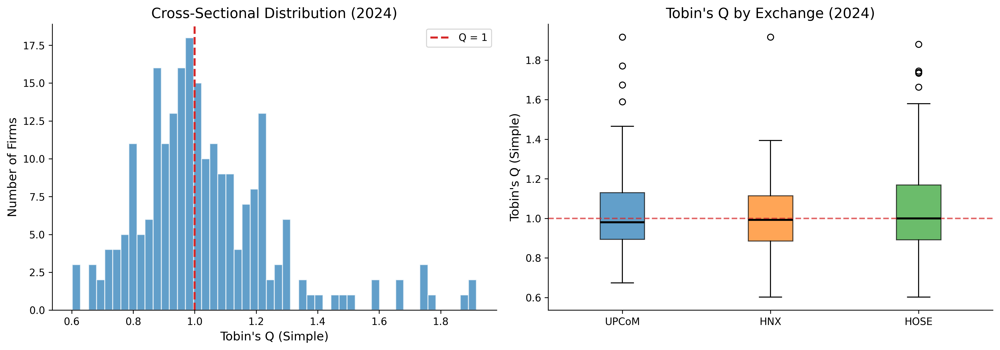
33.6 Time-Series Evolution of Tobin’s Q
# Compute annual statistics by exchange
annual_q = (
df_clean
.groupby(["year", "exchange"])["tobin_q_simple_w"]
.agg(["median", lambda x: x.quantile(0.25), lambda x: x.quantile(0.75)])
.reset_index()
)
annual_q.columns = ["year", "exchange", "median", "q25", "q75"]
fig, ax = plt.subplots(figsize=(12, 6))
exchange_colors = {"HOSE": colors["primary"], "HNX": colors["secondary"],
"UPCoM": colors["tertiary"]}
for exchange, color in exchange_colors.items():
data = annual_q[annual_q["exchange"] == exchange]
ax.plot(data["year"], data["median"], color=color, linewidth=2.5,
label=exchange, marker="o", markersize=4)
ax.fill_between(data["year"], data["q25"], data["q75"],
color=color, alpha=0.15)
ax.axhline(y=1, color="gray", linestyle="--", linewidth=1, alpha=0.7, label="Q = 1")
ax.set_xlabel("Year")
ax.set_ylabel("Tobin's Q (Median)")
ax.set_title("Evolution of Tobin's Q in the Vietnamese Market")
ax.legend(loc="upper right")
ax.set_xlim(2008, latest_year)
ax.xaxis.set_major_locator(mticker.MultipleLocator(2))
plt.tight_layout()
plt.show()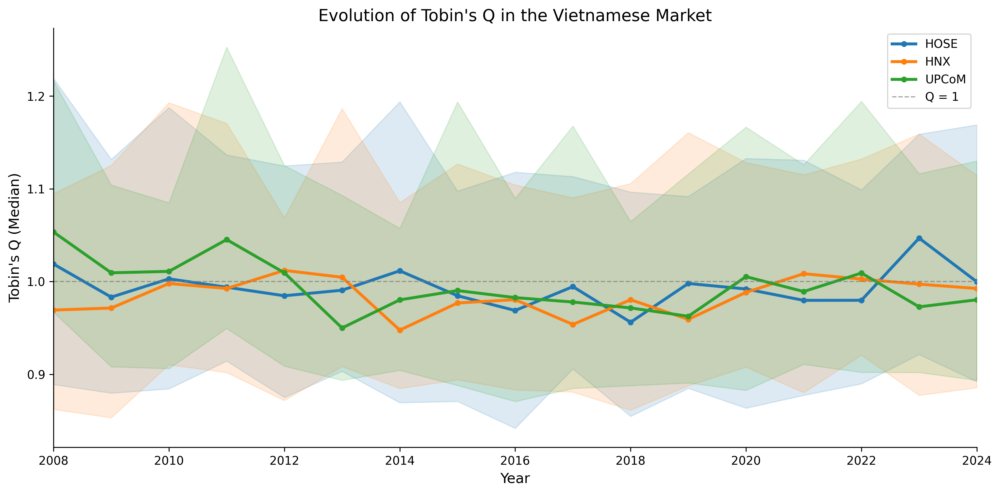
33.7 Tobin’s Q by Industry
latest_industry_q = (
latest_data
.groupby("industry")["tobin_q_simple_w"]
.agg(["median", "mean", "count"])
.reset_index()
.sort_values("median", ascending=True)
)
fig, ax = plt.subplots(figsize=(10, 8))
bar_colors = [colors["quaternary"] if m < 1 else colors["primary"]
for m in latest_industry_q["median"]]
ax.barh(
latest_industry_q["industry"],
latest_industry_q["median"],
color=bar_colors, alpha=0.8, edgecolor="white"
)
ax.axvline(x=1, color="gray", linestyle="--", linewidth=1.5, alpha=0.7)
ax.set_xlabel("Median Tobin's Q")
ax.set_title(f"Tobin's Q by Industry ({latest_year})")
# Add count annotations
for i, (_, row) in enumerate(latest_industry_q.iterrows()):
ax.text(row["median"] + 0.02, i, f'n={int(row["count"])}',
va="center", fontsize=9, color="gray")
plt.tight_layout()
plt.show()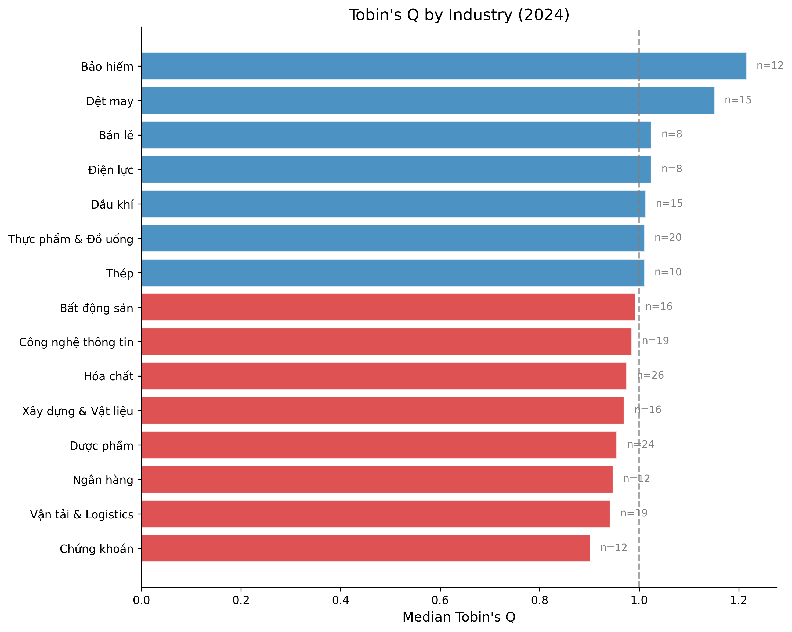
34 Computing the Altman Z-Score
34.1 Original Z-Score for Listed Firms
def compute_altman_z(df):
"""
Compute three variants of the Altman Z-Score:
1. Original Z-Score (for listed manufacturing firms)
2. Z'-Score (for private firms, using book equity)
3. Z''-Score (for emerging markets / non-manufacturing)
"""
result = df.copy()
# Common components
result["wc"] = result["act"].fillna(0) - result["lct"].fillna(0) # Working Capital
# --- Original Z-Score ---
# Z = 3.3*(EBIT/TA) + 0.999*(Sales/TA) + 0.6*(ME/TL) + 1.2*(WC/TA) + 1.4*(RE/TA)
x1 = result["ebit"] / result["at"]
x2 = result["sale"] / result["at"]
x3 = np.where(result["tlb"] > 0, result["me"] / result["tlb"], np.nan)
x4 = result["wc"] / result["at"]
x5 = result["re_var"].fillna(0) / result["at"]
result["z_x1"] = x1 # Earning power
result["z_x2"] = x2 # Asset turnover
result["z_x3"] = x3 # Leverage (inverse)
result["z_x4"] = x4 # Liquidity
result["z_x5"] = x5 # Cumulative profitability
result["altman_z"] = (3.3 * x1 + 0.999 * x2 + 0.6 * x3 + 1.2 * x4 + 1.4 * x5)
# --- Z'-Score (Private firms) ---
x3_prime = np.where(result["tlb"] > 0, result["be"] / result["tlb"], np.nan)
result["altman_z_prime"] = (
0.717 * x4 + 0.847 * x5 + 3.107 * x1 + 0.420 * x3_prime + 0.998 * x2
)
# --- Z''-Score (Emerging Markets) ---
result["altman_z_em"] = (
3.25
+ 6.56 * x4 # Working Capital / TA
+ 3.26 * x5 # Retained Earnings / TA
+ 6.72 * x1 # EBIT / TA
+ 1.05 * x3_prime # Book Equity / TL
)
# Classify risk zones
result["z_zone"] = pd.cut(
result["altman_z"],
bins=[-np.inf, 1.80, 2.70, 2.99, np.inf],
labels=["High Distress", "Distress", "Grey Zone", "Safe"]
)
result["z_em_zone"] = pd.cut(
result["altman_z_em"],
bins=[-np.inf, 1.10, 2.60, np.inf],
labels=["Distress", "Grey Zone", "Safe"]
)
return result
df_clean = compute_altman_z(df_clean)
# Winsorize Z-scores
for var in ["altman_z", "altman_z_prime", "altman_z_em"]:
df_clean[f"{var}_w"] = winsorize(df_clean[var])
print("Z-Score Summary Statistics")
z_summary = df_clean[["altman_z", "altman_z_prime", "altman_z_em"]].describe().round(3)
z_summary.columns = ["Original Z", "Z' (Private)", "Z'' (Emerging)"]
print(z_summary.to_string())Z-Score Summary Statistics
Original Z Z' (Private) Z'' (Emerging)
count 3484.000 3484.000 3484.000
mean 2.610 2.042 7.467
std 1.896 1.194 3.137
min 0.059 0.155 1.578
25% 1.595 1.314 5.670
50% 2.212 1.806 6.987
75% 3.028 2.410 8.549
max 28.640 11.119 29.68634.2 Z-Score Component Analysis
Understanding which components drive the Z-Score is particularly informative in the Vietnamese context, where certain ratios may behave differently than in developed markets.
fig, axes = plt.subplots(2, 3, figsize=(15, 9))
components = [
("z_x1", 3.3, "$3.3 \\times$ EBIT/TA\n(Earning Power)"),
("z_x2", 0.999, "$0.999 \\times$ Sales/TA\n(Asset Turnover)"),
("z_x3", 0.6, "$0.6 \\times$ ME/TL\n(Leverage)"),
("z_x4", 1.2, "$1.2 \\times$ WC/TA\n(Liquidity)"),
("z_x5", 1.4, "$1.4 \\times$ RE/TA\n(Cum. Profitability)"),
]
latest_z = df_clean[df_clean["year"] == latest_year]
for idx, (var, weight, label) in enumerate(components):
ax = axes[idx // 3, idx % 3]
weighted_vals = (latest_z[var] * weight).dropna()
weighted_vals = weighted_vals[weighted_vals.between(
weighted_vals.quantile(0.01), weighted_vals.quantile(0.99)
)]
ax.hist(weighted_vals, bins=40, color=colors["primary"], alpha=0.7, edgecolor="white")
ax.axvline(x=weighted_vals.median(), color=colors["quaternary"],
linestyle="--", linewidth=2, label=f"Median: {weighted_vals.median():.2f}")
ax.set_title(label, fontsize=11)
ax.legend(fontsize=9)
# Remove empty subplot
axes[1, 2].set_visible(False)
plt.suptitle(f"Z-Score Component Distributions ({latest_year})", fontsize=14, y=1.02)
plt.tight_layout()
plt.show()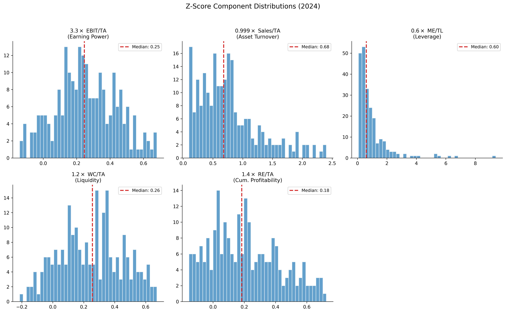
34.3 Distribution of Risk Zones
fig, axes = plt.subplots(1, 2, figsize=(14, 6))
# --- Original Z-Score Zones ---
zone_counts = (
df_clean
.groupby(["year", "z_zone"])
.size()
.unstack(fill_value=0)
)
zone_pcts = zone_counts.div(zone_counts.sum(axis=1), axis=0) * 100
zone_colors = {
"Safe": colors["safe"],
"Grey Zone": colors["alert"],
"Distress": colors["quaternary"],
"High Distress": colors["distress"],
}
axes[0].stackplot(
zone_pcts.index,
*[zone_pcts[col] for col in ["Safe", "Grey Zone", "Distress", "High Distress"]
if col in zone_pcts.columns],
labels=[col for col in ["Safe", "Grey Zone", "Distress", "High Distress"]
if col in zone_pcts.columns],
colors=[zone_colors[col] for col in ["Safe", "Grey Zone", "Distress", "High Distress"]
if col in zone_pcts.columns],
alpha=0.8
)
axes[0].set_xlabel("Year")
axes[0].set_ylabel("Percentage of Firms")
axes[0].set_title("Original Z-Score Risk Zones")
axes[0].legend(loc="upper right", fontsize=9)
axes[0].set_ylim(0, 100)
# --- Emerging Market Z''-Score Zones ---
em_zone_counts = (
df_clean
.groupby(["year", "z_em_zone"])
.size()
.unstack(fill_value=0)
)
em_zone_pcts = em_zone_counts.div(em_zone_counts.sum(axis=1), axis=0) * 100
em_zone_colors = {"Safe": colors["safe"], "Grey Zone": colors["alert"],
"Distress": colors["quaternary"]}
axes[1].stackplot(
em_zone_pcts.index,
*[em_zone_pcts[col] for col in ["Safe", "Grey Zone", "Distress"]
if col in em_zone_pcts.columns],
labels=[col for col in ["Safe", "Grey Zone", "Distress"]
if col in em_zone_pcts.columns],
colors=[em_zone_colors[col] for col in ["Safe", "Grey Zone", "Distress"]
if col in em_zone_pcts.columns],
alpha=0.8
)
axes[1].set_xlabel("Year")
axes[1].set_ylabel("Percentage of Firms")
axes[1].set_title("Emerging Market Z''-Score Risk Zones")
axes[1].legend(loc="upper right", fontsize=9)
axes[1].set_ylim(0, 100)
plt.tight_layout()
plt.show()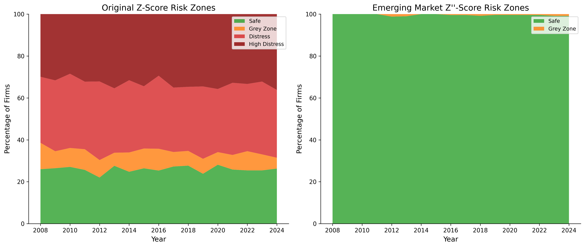
34.4 Comparing Z-Score Variants
An important practical question is which Z-Score variant is most appropriate for Vietnamese firms. The original model was calibrated on U.S. manufacturing firms, while the Z’’-Score was specifically designed for emerging markets and non-manufacturing sectors.
fig, ax = plt.subplots(figsize=(8, 8))
sample = latest_z.dropna(subset=["altman_z_w", "altman_z_em_w"]).sample(
min(500, len(latest_z)), random_state=42
)
scatter = ax.scatter(
sample["altman_z_w"], sample["altman_z_em_w"],
c=sample["tobin_q_simple_w"], cmap="RdYlGn",
alpha=0.6, s=30, edgecolor="white", linewidth=0.3
)
# Add reference lines
lims = [
min(ax.get_xlim()[0], ax.get_ylim()[0]),
max(ax.get_xlim()[1], ax.get_ylim()[1])
]
ax.plot(lims, lims, "k--", alpha=0.3, linewidth=1, label="45° line")
# Add zone boundaries
ax.axvline(x=1.80, color="red", linestyle=":", alpha=0.5, linewidth=1)
ax.axvline(x=2.99, color="green", linestyle=":", alpha=0.5, linewidth=1)
ax.axhline(y=1.10, color="red", linestyle=":", alpha=0.5, linewidth=1)
ax.axhline(y=2.60, color="green", linestyle=":", alpha=0.5, linewidth=1)
ax.set_xlabel("Original Z-Score")
ax.set_ylabel("Emerging Market Z''-Score")
ax.set_title("Z-Score vs Z''-Score for Vietnamese Firms")
cbar = plt.colorbar(scatter, ax=ax, shrink=0.8)
cbar.set_label("Tobin's Q")
ax.legend(loc="upper left")
plt.tight_layout()
plt.show()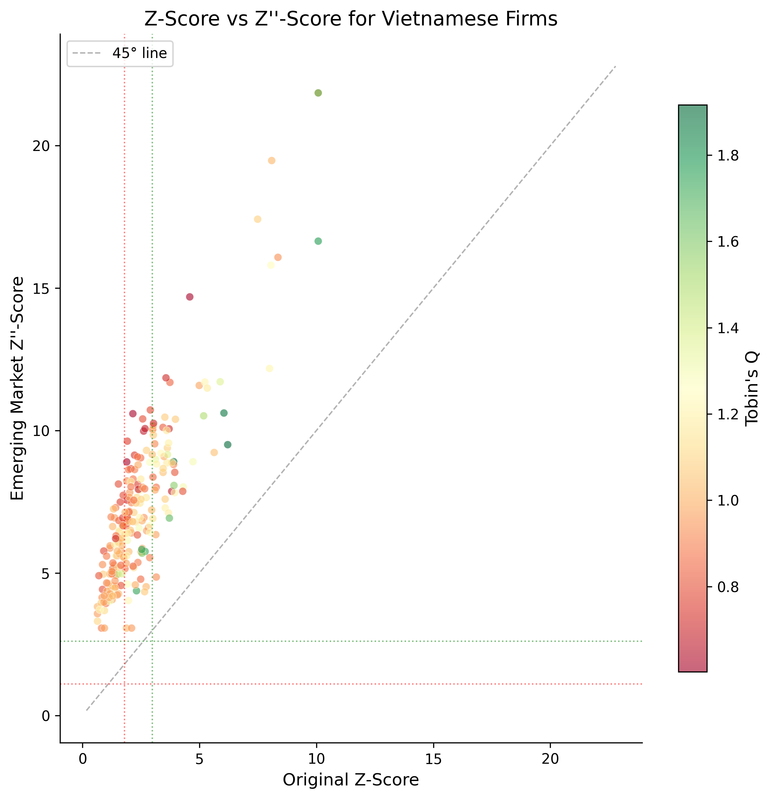
35 Computing Company Age
35.1 Multiple Age Proxies
For Vietnamese firms, we compute three age measures:
\[ \text{Age}_{\text{founding}} = \text{Current Year} - \text{Founding Year} \tag{35.1}\]
\[ \text{Age}_{\text{listing}} = \text{Current Year} - \text{Listing Year} \tag{35.2}\]
\[ \text{Age}_{\text{data}} = \text{Current Year} - \text{First Year with Data} \tag{35.3}\]
def compute_company_age(df):
"""
Compute multiple proxies for company age.
For Vietnamese firms:
- Founding age: based on founding/incorporation date
- Listing age: based on first listing on HOSE/HNX/UPCoM
- Data age: based on first year with available financial data
"""
result = df.copy()
# Founding age
result["age_founding"] = result["year"] - result["founding_year"]
# Listing age
result["age_listing"] = result["year"] - result["listing_year"]
result["age_listing"] = result["age_listing"].clip(lower=0)
# Data age (years since first available financial data)
first_year = result.groupby("ticker")["year"].transform("min")
result["age_data"] = result["year"] - first_year
# Log of age (commonly used in regressions)
result["ln_age_founding"] = np.log1p(result["age_founding"])
result["ln_age_listing"] = np.log1p(result["age_listing"])
return result
df_clean = compute_company_age(df_clean)
print("Company Age Summary Statistics")
age_summary = df_clean[df_clean["year"] == latest_year][
["age_founding", "age_listing", "age_data"]
].describe().round(1)
age_summary.columns = ["Founding Age", "Listing Age", "Data Age"]
print(age_summary.to_string())Company Age Summary Statistics
Founding Age Listing Age Data Age
count 232.0 232.0 232.0
mean 30.1 13.9 12.3
std 11.6 5.8 3.9
min 10.0 5.0 5.0
25% 20.0 9.0 9.0
50% 30.0 13.0 13.0
75% 40.0 19.0 16.0
max 49.0 24.0 16.035.2 Age Distribution
fig, axes = plt.subplots(1, 3, figsize=(15, 5))
age_vars = [
("age_founding", "Founding Age (years)", colors["primary"]),
("age_listing", "Listing Age (years)", colors["secondary"]),
("age_data", "Data Age (years)", colors["tertiary"]),
]
latest = df_clean[df_clean["year"] == latest_year]
for ax, (var, label, color) in zip(axes, age_vars):
data = latest[var].dropna()
ax.hist(data, bins=30, color=color, alpha=0.7, edgecolor="white")
ax.axvline(x=data.median(), color="black", linestyle="--",
linewidth=2, label=f"Median: {data.median():.0f}")
ax.set_xlabel(label)
ax.set_ylabel("Number of Firms")
ax.legend()
axes[0].set_title("Founding Age")
axes[1].set_title("Listing Age")
axes[2].set_title("Data Age")
plt.suptitle(f"Company Age Distributions ({latest_year})", fontsize=14, y=1.02)
plt.tight_layout()
plt.show()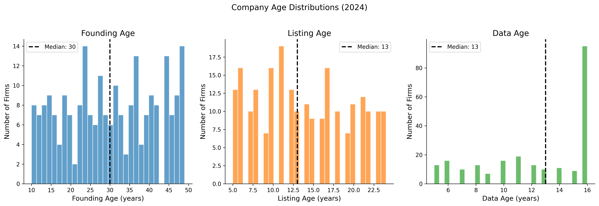
35.3 Age and the Equitization Effect
A distinctive feature of the Vietnamese market is the equitization of SOEs. Many firms have founding dates that predate the stock market by decades, creating a large gap between founding age and listing age.
fig, ax = plt.subplots(figsize=(8, 8))
latest = df_clean[df_clean["year"] == latest_year].copy()
latest["soe_flag"] = latest["state_ownership_pct"] > 30 # SOE proxy
for soe, label, color, marker in [
(True, "SOE (>30% state)", colors["quaternary"], "s"),
(False, "Non-SOE", colors["primary"], "o"),
]:
subset = latest[latest["soe_flag"] == soe]
ax.scatter(
subset["age_listing"], subset["age_founding"],
c=color, alpha=0.5, s=25, marker=marker, label=label, edgecolor="white"
)
# 45-degree line
max_age = max(latest["age_founding"].max(), latest["age_listing"].max())
ax.plot([0, max_age], [0, max_age], "k--", alpha=0.3, label="Founding = Listing age")
ax.set_xlabel("Listing Age (years)")
ax.set_ylabel("Founding Age (years)")
ax.set_title("Founding vs. Listing Age: The Equitization Gap")
ax.legend()
plt.tight_layout()
plt.show()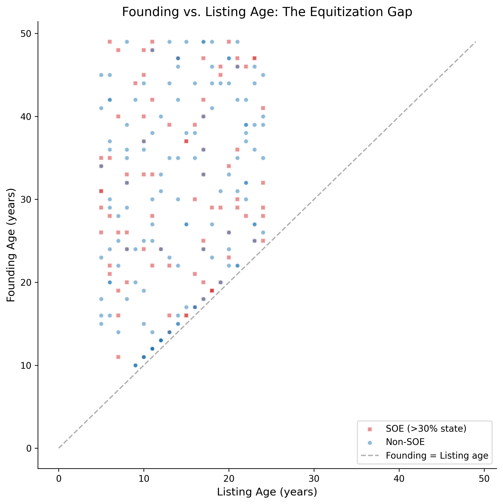
36 Joint Analysis: Valuation, Distress, and Maturity
36.1 The Relationship Between Q, Z-Score, and Age
These three measures capture different dimensions of a firm’s financial standing, but they are not independent. Theoretically, we expect:
- Q and Z: Firms with high growth opportunities (high Q) tend to be financially healthier (high Z), but the relationship is not monotonic, very high Q values may indicate speculative overvaluation.
- Q and Age: Young firms may have higher Q (growth expectations) or lower Q (unproven business model). The relationship depends on the industry life cycle.
- Z and Age: Older firms typically have more stable earnings and higher retained earnings, contributing to higher Z-Scores, though very old firms may face declining competitiveness.
fig, axes = plt.subplots(1, 3, figsize=(16, 5))
sample = latest.dropna(subset=["tobin_q_simple_w", "altman_z_w", "age_founding"])
sample = sample.sample(min(300, len(sample)), random_state=42)
# Q vs Z
axes[0].scatter(
sample["altman_z_w"], sample["tobin_q_simple_w"],
c=sample["age_founding"], cmap="viridis", alpha=0.6,
s=np.log1p(sample["at"]) * 3, edgecolor="white", linewidth=0.3
)
axes[0].set_xlabel("Altman Z-Score")
axes[0].set_ylabel("Tobin's Q")
axes[0].set_title("Valuation vs. Distress Risk")
axes[0].axhline(y=1, color="gray", linestyle="--", alpha=0.5)
axes[0].axvline(x=1.80, color="red", linestyle=":", alpha=0.5)
axes[0].axvline(x=2.99, color="green", linestyle=":", alpha=0.5)
# Q vs Age
axes[1].scatter(
sample["age_founding"], sample["tobin_q_simple_w"],
c=sample["altman_z_w"], cmap="RdYlGn", alpha=0.6,
s=np.log1p(sample["at"]) * 3, edgecolor="white", linewidth=0.3
)
axes[1].set_xlabel("Founding Age (years)")
axes[1].set_ylabel("Tobin's Q")
axes[1].set_title("Valuation vs. Maturity")
axes[1].axhline(y=1, color="gray", linestyle="--", alpha=0.5)
# Z vs Age
scatter = axes[2].scatter(
sample["age_founding"], sample["altman_z_w"],
c=sample["tobin_q_simple_w"], cmap="coolwarm", alpha=0.6,
s=np.log1p(sample["at"]) * 3, edgecolor="white", linewidth=0.3
)
axes[2].set_xlabel("Founding Age (years)")
axes[2].set_ylabel("Altman Z-Score")
axes[2].set_title("Distress Risk vs. Maturity")
axes[2].axhline(y=1.80, color="red", linestyle=":", alpha=0.5)
axes[2].axhline(y=2.99, color="green", linestyle=":", alpha=0.5)
plt.tight_layout()
plt.show()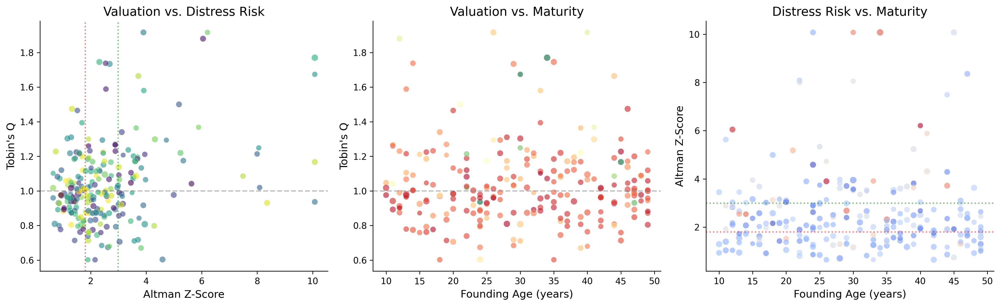
36.2 Correlation Structure
corr_vars = [
"tobin_q_simple_w", "mtb_w", "altman_z_w", "altman_z_em_w",
"age_founding", "age_listing",
"z_x1", "z_x2", "z_x3", "z_x4", "z_x5"
]
corr_labels = [
"Tobin's Q", "M/B Ratio", "Z-Score", "Z'' (EM)",
"Age (Found.)", "Age (List.)",
"EBIT/TA", "Sales/TA", "ME/TL", "WC/TA", "RE/TA"
]
corr_matrix = df_clean[corr_vars].corr()
corr_matrix.index = corr_labels
corr_matrix.columns = corr_labels
fig, ax = plt.subplots(figsize=(12, 10))
mask = np.triu(np.ones_like(corr_matrix, dtype=bool), k=1)
cmap = sns.diverging_palette(250, 15, s=75, l=40, n=9, center="light", as_cmap=True)
sns.heatmap(
corr_matrix, mask=mask, cmap=cmap, center=0,
annot=True, fmt=".2f", square=True,
linewidths=0.5, cbar_kws={"shrink": 0.8},
ax=ax, vmin=-1, vmax=1,
annot_kws={"size": 9}
)
ax.set_title("Correlation Matrix of Key Financial Measures", fontsize=14, pad=20)
plt.tight_layout()
plt.show()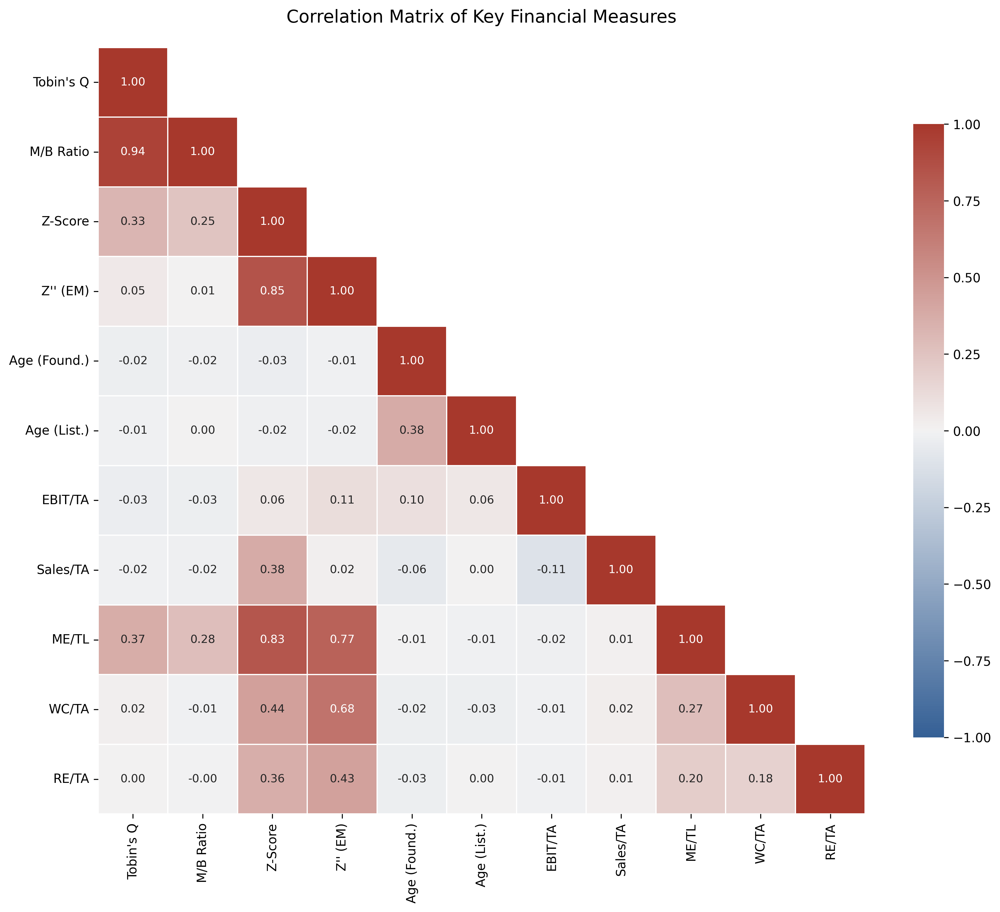
36.3 Cross-Sectional Regression Analysis
We estimate a simple cross-sectional model to examine the determinants of Tobin’s Q in the Vietnamese market:
\[ Q_{i,t} = \alpha + \beta_1 \ln(\text{Age}_{i}) + \beta_2 Z''_{i,t} + \beta_3 \text{SOE}_{i} + \beta_4 \ln(\text{TA}_{i,t}) + \varepsilon_{i,t} \tag{36.1}\]
from numpy.linalg import lstsq
# Prepare regression data
reg_data = latest.dropna(
subset=["tobin_q_simple_w", "ln_age_founding", "altman_z_em_w", "at"]
).copy()
reg_data["ln_at"] = np.log(reg_data["at"])
reg_data["soe_dummy"] = (reg_data["state_ownership_pct"] > 30).astype(int)
reg_data["constant"] = 1.0
# OLS estimation
y = reg_data["tobin_q_simple_w"].values
X = reg_data[["constant", "ln_age_founding", "altman_z_em_w",
"soe_dummy", "ln_at"]].values
betas, residuals, rank, sv = lstsq(X, y, rcond=None)
y_hat = X @ betas
resid = y - y_hat
n, k = X.shape
# Standard errors (heteroskedasticity-robust would be better)
sigma2 = np.sum(resid**2) / (n - k)
var_beta = sigma2 * np.linalg.inv(X.T @ X)
se = np.sqrt(np.diag(var_beta))
t_stats = betas / se
r_squared = 1 - np.sum(resid**2) / np.sum((y - y.mean())**2)
adj_r2 = 1 - (1 - r_squared) * (n - 1) / (n - k - 1)
# Display results
var_names = ["Constant", "ln(Age)", "Z''-Score (EM)", "SOE Dummy", "ln(Total Assets)"]
print("=" * 65)
print(" Cross-Sectional Regression: Determinants of Tobin's Q")
print(f" Dependent Variable: Tobin's Q (Simple, Winsorized)")
print(f" Sample: {n} firms ({latest_year})")
print("=" * 65)
print(f" {'Variable':<22} {'Coef':>10} {'Std.Err':>10} {'t-stat':>10}")
print("-" * 65)
for name, b, s, t in zip(var_names, betas, se, t_stats):
sig = "***" if abs(t) > 2.576 else "**" if abs(t) > 1.96 else "*" if abs(t) > 1.645 else ""
print(f" {name:<22} {b:>10.4f} {s:>10.4f} {t:>8.2f} {sig}")
print("-" * 65)
print(f" R-squared: {r_squared:.4f}")
print(f" Adjusted R-squared: {adj_r2:.4f}")
print(f" Observations: {n}")
print("=" * 65)
print(" Significance: *** p<0.01, ** p<0.05, * p<0.10")=================================================================
Cross-Sectional Regression: Determinants of Tobin's Q
Dependent Variable: Tobin's Q (Simple, Winsorized)
Sample: 232 firms (2024)
=================================================================
Variable Coef Std.Err t-stat
-----------------------------------------------------------------
Constant 0.9686 0.1959 4.94 ***
ln(Age) -0.0064 0.0365 -0.18
Z''-Score (EM) 0.0067 0.0050 1.34
SOE Dummy 0.0327 0.0315 1.04
ln(Total Assets) 0.0018 0.0096 0.19
-----------------------------------------------------------------
R-squared: 0.0126
Adjusted R-squared: -0.0092
Observations: 232
=================================================================
Significance: *** p<0.01, ** p<0.05, * p<0.1037 The Complete Pipeline
37.1 Putting It All Together
Here we provide a single, clean function that takes raw DataCore.vn financial data and produces a complete dataset with all three measures computed.
def compute_valuation_distress_age(df, firm_profiles=None):
"""
Complete pipeline to compute Tobin's Q, Altman Z-Score variants,
and Company Age for Vietnamese listed firms.
Parameters
----------
df : pd.DataFrame
Panel of firm-year financial data with columns:
at, seq, lt, lct, tlb, sale, ebit, ni, re_var, act,
ppent, invt, txdb, itcb, pstk, me, prcc, csho, year, ticker
firm_profiles : pd.DataFrame, optional
Company profiles with founding_year, listing_year
Returns
-------
pd.DataFrame
Input data augmented with computed measures
"""
result = df.copy()
# === Data Quality Filters ===
result = result[result["at"] > 0]
result = result[result["seq"] > 0]
# === Book Value of Equity (Daniel & Titman 1997) ===
result["pref"] = result["pstk"].fillna(0)
result["be"] = (
result["seq"]
+ result["txdb"].fillna(0)
+ result["itcb"].fillna(0)
- result["pref"]
)
# === Market Value of Equity ===
if "me" not in result.columns or result["me"].isna().all():
result["me"] = result["prcc"] * result["csho"]
# === Tobin's Q Variants ===
# Simple Q (Gompers et al. 2003)
result["tobin_q"] = (result["at"] + result["me"] - result["be"]) / result["at"]
# Chung-Pruitt Q
debt_cp = (
result["lct"].fillna(0) - result["act"].fillna(0)
+ result["invt"].fillna(0) + result["lt"].fillna(0)
)
result["tobin_q_cp"] = (
(result["me"] + result["pstk"].fillna(0) + debt_cp) / result["at"]
)
# Market-to-Book
result["mtb"] = np.where(result["be"] > 0, result["me"] / result["be"], np.nan)
# === Altman Z-Score Variants ===
result["wc"] = result["act"].fillna(0) - result["lct"].fillna(0)
x1 = result["ebit"] / result["at"]
x2 = result["sale"] / result["at"]
x3_market = np.where(result["tlb"] > 0, result["me"] / result["tlb"], np.nan)
x3_book = np.where(result["tlb"] > 0, result["be"] / result["tlb"], np.nan)
x4 = result["wc"] / result["at"]
x5 = result["re_var"].fillna(0) / result["at"]
# Original Z
result["altman_z"] = 3.3 * x1 + 0.999 * x2 + 0.6 * x3_market + 1.2 * x4 + 1.4 * x5
# Z' (private firms)
result["altman_z_prime"] = (
0.717 * x4 + 0.847 * x5 + 3.107 * x1 + 0.420 * x3_book + 0.998 * x2
)
# Z'' (emerging markets)
result["altman_z_em"] = (
3.25 + 6.56 * x4 + 3.26 * x5 + 6.72 * x1 + 1.05 * x3_book
)
# Risk zones
result["z_zone"] = pd.cut(
result["altman_z"],
bins=[-np.inf, 1.80, 2.70, 2.99, np.inf],
labels=["High Distress", "Distress", "Grey Zone", "Safe"]
)
result["z_em_zone"] = pd.cut(
result["altman_z_em"],
bins=[-np.inf, 1.10, 2.60, np.inf],
labels=["Distress", "Grey Zone", "Safe"]
)
# === Company Age ===
if firm_profiles is not None:
result = result.merge(
firm_profiles[["ticker", "founding_year", "listing_year"]],
on="ticker", how="left", suffixes=("", "_profile")
)
result["age_founding"] = result["year"] - result["founding_year"]
result["age_listing"] = (result["year"] - result["listing_year"]).clip(lower=0)
first_year = result.groupby("ticker")["year"].transform("min")
result["age_data"] = result["year"] - first_year
# === Winsorize ===
for var in ["tobin_q", "tobin_q_cp", "mtb", "altman_z", "altman_z_prime", "altman_z_em"]:
if var in result.columns:
result[f"{var}_w"] = winsorize(result[var])
return result
# Demonstrate the pipeline
final_df = compute_valuation_distress_age(df, firm_profiles)
print(f"Final dataset: {final_df.shape[0]:,} observations, {final_df.shape[1]} variables")
print(f"Firms: {final_df['ticker'].nunique()}")
print(f"\nKey variables computed:")
for var in ["tobin_q", "tobin_q_cp", "mtb", "altman_z", "altman_z_prime",
"altman_z_em", "age_founding", "age_listing", "age_data"]:
if var in final_df.columns:
non_null = final_df[var].notna().sum()
print(f" {var}: {non_null:,} non-null values")Final dataset: 3,484 observations, 48 variables
Firms: 297
Key variables computed:
tobin_q: 3,484 non-null values
tobin_q_cp: 3,484 non-null values
mtb: 3,484 non-null values
altman_z: 3,484 non-null values
altman_z_prime: 3,484 non-null values
altman_z_em: 3,484 non-null values
age_founding: 3,484 non-null values
age_listing: 3,484 non-null values
age_data: 3,484 non-null values37.2 Exporting Results
# Select key output variables
output_vars = [
"ticker", "year", "datadate", "exchange", "industry",
"at", "be", "me", "tobin_q", "tobin_q_w", "mtb", "mtb_w",
"altman_z", "altman_z_w", "altman_z_em", "altman_z_em_w",
"z_zone", "z_em_zone",
"age_founding", "age_listing", "age_data",
"state_ownership_pct"
]
export_cols = [v for v in output_vars if v in final_df.columns]
export_df = final_df[export_cols].copy()
# export_df.to_csv("vn_valuation_distress_age.csv", index=False)
# export_df.to_parquet("vn_valuation_distress_age.parquet", index=False)
print(f"Export dataset: {export_df.shape[0]:,} rows × {export_df.shape[1]} columns")
print(f"\nSample output (first 5 rows):")
display_cols = ["ticker", "year", "tobin_q", "altman_z", "altman_z_em",
"z_zone", "age_founding"]
display_cols = [c for c in display_cols if c in export_df.columns]
print(export_df[display_cols].head().to_string(index=False))Export dataset: 3,484 rows × 22 columns
Sample output (first 5 rows):
ticker year tobin_q altman_z altman_z_em z_zone age_founding
VN0001 2017 0.905928 3.345941 5.605169 Safe 4
VN0001 2018 1.270114 5.324082 9.228846 Safe 5
VN0001 2019 1.866493 5.478529 6.264178 Safe 6
VN0001 2020 1.016979 5.612289 10.445449 Safe 7
VN0001 2021 0.805818 4.220869 7.588273 Safe 838 Special Topics for the Vietnamese Market
38.1 State Ownership and Valuation
State ownership is a defining feature of the Vietnamese corporate landscape. We examine how state ownership affects both Tobin’s Q and financial distress risk.
fig, axes = plt.subplots(1, 2, figsize=(14, 6))
latest = final_df[final_df["year"] == latest_year].dropna(
subset=["tobin_q_w", "altman_z_em_w", "state_ownership_pct"]
)
# Q vs State Ownership
axes[0].scatter(
latest["state_ownership_pct"], latest["tobin_q_w"],
alpha=0.4, s=20, color=colors["primary"], edgecolor="white"
)
# Binned means
bins = pd.cut(latest["state_ownership_pct"], bins=10)
binned = latest.groupby(bins)["tobin_q_w"].mean()
bin_centers = [(b.left + b.right) / 2 for b in binned.index]
axes[0].plot(bin_centers, binned.values, color=colors["quaternary"],
linewidth=3, label="Binned Mean")
axes[0].set_xlabel("State Ownership (%)")
axes[0].set_ylabel("Tobin's Q")
axes[0].set_title("State Ownership and Firm Valuation")
axes[0].axhline(y=1, color="gray", linestyle="--", alpha=0.5)
axes[0].legend()
# Z''-Score by SOE quartile
latest["soe_quartile"] = pd.qcut(
latest["state_ownership_pct"],
q=4, labels=["Q1 (Low)", "Q2", "Q3", "Q4 (High)"],
duplicates="drop"
)
soe_groups = latest.groupby("soe_quartile")["altman_z_em_w"]
box_data = [group.values for name, group in soe_groups]
bp = axes[1].boxplot(
box_data,
labels=[name for name, _ in soe_groups],
patch_artist=True,
medianprops=dict(color="black", linewidth=2)
)
gradient_colors = plt.cm.Blues(np.linspace(0.3, 0.8, len(bp["boxes"])))
for patch, color in zip(bp["boxes"], gradient_colors):
patch.set_facecolor(color)
axes[1].axhline(y=2.60, color="green", linestyle=":", alpha=0.5, label="Safe threshold")
axes[1].axhline(y=1.10, color="red", linestyle=":", alpha=0.5, label="Distress threshold")
axes[1].set_xlabel("State Ownership Quartile")
axes[1].set_ylabel("Z''-Score (Emerging Market)")
axes[1].set_title("Financial Health by State Ownership")
axes[1].legend(fontsize=9)
plt.tight_layout()
plt.show()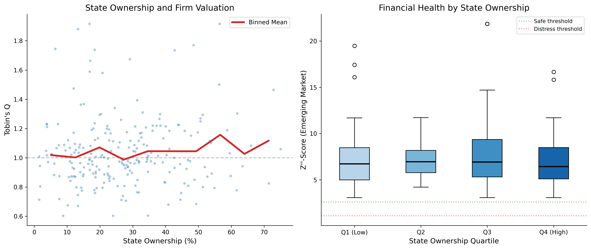
38.2 Exchange-Level Analysis
exchange_summary = (
latest
.groupby("exchange")
.agg(
n_firms=("ticker", "nunique"),
median_q=("tobin_q_w", "median"),
mean_q=("tobin_q_w", "mean"),
median_z=("altman_z_w", "median"),
mean_z_em=("altman_z_em_w", "mean"),
pct_distress_z=("z_zone", lambda x: (x == "High Distress").mean() * 100),
pct_distress_em=("z_em_zone", lambda x: (x == "Distress").mean() * 100),
median_age=("age_founding", "median"),
median_soe=("state_ownership_pct", "median"),
)
.round(2)
)
exchange_summary.columns = [
"N Firms", "Median Q", "Mean Q", "Median Z", "Mean Z'' (EM)",
"% Distress (Z)", "% Distress (Z'')", "Median Age", "Median SOE %"
]
exchange_summary.style.set_properties(**{
"text-align": "center",
"font-size": "10pt"
}).set_table_styles([
{"selector": "th", "props": [
("background-color", "#1f77b4"),
("color", "white"),
("text-align", "center"),
("padding", "8px")
]},
]).format({
"Median Q": "{:.2f}", "Mean Q": "{:.2f}",
"Median Z": "{:.2f}", "Mean Z'' (EM)": "{:.2f}",
"% Distress (Z)": "{:.1f}%", "% Distress (Z'')": "{:.1f}%",
"Median Age": "{:.0f}", "Median SOE %": "{:.1f}%"
})| N Firms | Median Q | Mean Q | Median Z | Mean Z'' (EM) | % Distress (Z) | % Distress (Z'') | Median Age | Median SOE % | |
|---|---|---|---|---|---|---|---|---|---|
| exchange | |||||||||
| HNX | 77 | 0.99 | 1.02 | 2.07 | 7.25 | 32.5% | 0.0% | 33 | 22.1% |
| HOSE | 113 | 1.00 | 1.04 | 2.06 | 7.24 | 40.7% | 0.0% | 29 | 26.8% |
| UPCoM | 42 | 0.98 | 1.05 | 2.13 | 7.80 | 30.9% | 0.0% | 26 | 27.6% |
38.3 Sector Heatmap: Valuation and Distress
fig, axes = plt.subplots(1, 2, figsize=(16, 8))
# Tobin's Q heatmap
q_pivot = (
final_df
.groupby(["industry", "year"])["tobin_q_w"]
.median()
.unstack(fill_value=np.nan)
)
sns.heatmap(
q_pivot, cmap="RdYlGn", center=1, ax=axes[0],
cbar_kws={"label": "Median Q", "shrink": 0.8},
linewidths=0.5, linecolor="white",
xticklabels=2
)
axes[0].set_title("Tobin's Q by Industry and Year")
axes[0].set_xlabel("Year")
axes[0].set_ylabel("")
# Z''-Score heatmap
z_pivot = (
final_df
.groupby(["industry", "year"])["altman_z_em_w"]
.median()
.unstack(fill_value=np.nan)
)
sns.heatmap(
z_pivot, cmap="RdYlGn", center=2.6, ax=axes[1],
cbar_kws={"label": "Median Z''", "shrink": 0.8},
linewidths=0.5, linecolor="white",
xticklabels=2
)
axes[1].set_title("Z''-Score (EM) by Industry and Year")
axes[1].set_xlabel("Year")
axes[1].set_ylabel("")
plt.tight_layout()
plt.show()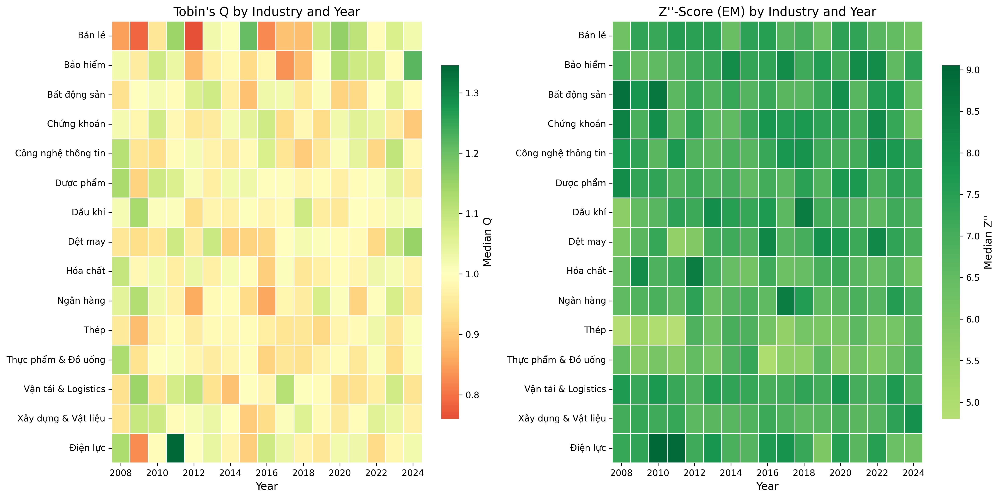
38.4 Handling Delisted Firms: Survivorship Bias
A critical issue in measuring financial distress is survivorship bias. If we only analyze currently listed firms, we miss the very firms that the Z-Score is designed to identify, those that went bankrupt or were delisted.
# Simulate delisting data (replace with DataCore.vn delisting records)
np.random.seed(123)
n_delisted = 50
delisted_firms = pd.DataFrame({
"ticker": [f"VN{str(i).zfill(4)}" for i in range(n_firms + 1, n_firms + n_delisted + 1)],
"delist_year": np.random.randint(2010, 2024, n_delisted),
"delist_reason": np.random.choice(
["Bankruptcy/Liquidation", "Merger/Acquisition", "Voluntary Delisting",
"Regulatory Non-compliance", "Below Minimum Requirements"],
n_delisted,
p=[0.15, 0.25, 0.20, 0.20, 0.20]
)
})
# Summary of delisting reasons
print("Delisting Reasons Summary")
print("=" * 50)
reason_counts = delisted_firms["delist_reason"].value_counts()
for reason, count in reason_counts.items():
print(f" {reason}: {count} ({count/n_delisted*100:.0f}%)")
print(f"\nTotal delisted: {n_delisted}")
print(f"Currently listed: {final_df['ticker'].nunique()}")
print(f"\nSurvivorship rate: "
f"{final_df['ticker'].nunique()/(final_df['ticker'].nunique()+n_delisted)*100:.1f}%")Delisting Reasons Summary
==================================================
Merger/Acquisition: 16 (32%)
Voluntary Delisting: 14 (28%)
Regulatory Non-compliance: 9 (18%)
Below Minimum Requirements: 7 (14%)
Bankruptcy/Liquidation: 4 (8%)
Total delisted: 50
Currently listed: 297
Survivorship rate: 85.6%39 Robustness Checks and Extensions
39.1 Alternative Tobin’s Q Specifications
fig, ax = plt.subplots(figsize=(7, 7))
sample = latest.dropna(subset=["tobin_q_w", "tobin_q_cp"]).copy()
sample["tobin_q_cp_w"] = winsorize(sample["tobin_q_cp"])
ax.scatter(
sample["tobin_q_w"], sample["tobin_q_cp_w"],
alpha=0.4, s=15, color=colors["primary"], edgecolor="white"
)
# 45-degree line
lims = [
min(ax.get_xlim()[0], ax.get_ylim()[0]),
max(ax.get_xlim()[1], ax.get_ylim()[1])
]
ax.plot(lims, lims, "k--", alpha=0.3)
corr = sample["tobin_q_w"].corr(sample["tobin_q_cp_w"])
ax.text(0.05, 0.95, f"Correlation: {corr:.3f}",
transform=ax.transAxes, fontsize=12,
verticalalignment="top",
bbox=dict(boxstyle="round", facecolor="wheat", alpha=0.5))
ax.set_xlabel("Simple Q (Gompers et al.)")
ax.set_ylabel("Chung-Pruitt Q")
ax.set_title("Comparison of Tobin's Q Variants")
plt.tight_layout()
plt.show()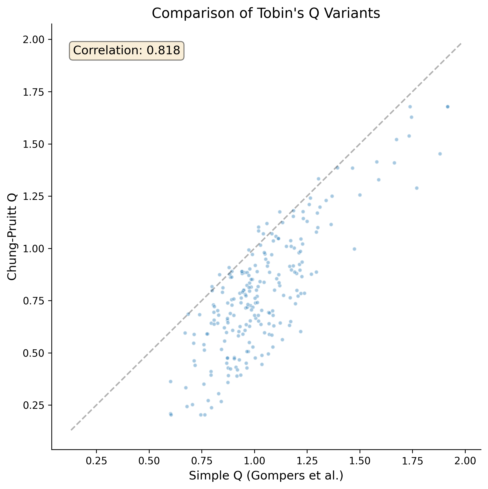
39.2 Industry-Adjusted Measures
Raw Tobin’s Q and Z-Scores may reflect industry characteristics rather than firm-specific attributes. We compute industry-adjusted versions:
\[ Q^{\text{adj}}_{i,t} = Q_{i,t} - \overline{Q}_{j(i),t} \tag{39.1}\]
where \(\overline{Q}_{j(i),t}\) is the median Tobin’s Q of the industry \(j\) to which firm \(i\) belongs in year \(t\).
def industry_adjust(df, var, group_var="industry"):
"""Compute industry-adjusted measure (deviation from industry median)."""
industry_median = df.groupby(["year", group_var])[var].transform("median")
return df[var] - industry_median
final_df["tobin_q_adj"] = industry_adjust(final_df, "tobin_q_w")
final_df["altman_z_em_adj"] = industry_adjust(final_df, "altman_z_em_w")
latest_adj = final_df[final_df["year"] == latest_year]
print("Industry-Adjusted Measures (Latest Year)")
print(f" Tobin's Q (adjusted): mean={latest_adj['tobin_q_adj'].mean():.4f}, "
f"std={latest_adj['tobin_q_adj'].std():.3f}")
print(f" Z''-Score (adjusted): mean={latest_adj['altman_z_em_adj'].mean():.4f}, "
f"std={latest_adj['altman_z_em_adj'].std():.3f}")Industry-Adjusted Measures (Latest Year)
Tobin's Q (adjusted): mean=0.0352, std=0.226
Z''-Score (adjusted): mean=0.4840, std=3.03039.3 Panel Regression with Fixed Effects
For more rigorous analysis, we estimate a panel model with firm and year fixed effects:
\[ Q_{i,t} = \alpha_i + \gamma_t + \beta_1 Z''_{i,t} + \beta_2 \ln(\text{Age}_{i,t}) + \beta_3 \text{Size}_{i,t} + \varepsilon_{i,t} \tag{39.2}\]
# Simplified within-estimator (year and industry demeaning)
panel = final_df.dropna(
subset=["tobin_q_w", "altman_z_em_w", "age_founding", "at"]
).copy()
panel["ln_at"] = np.log(panel["at"])
panel["ln_age"] = np.log1p(panel["age_founding"])
# Demean by year-industry (proxy for fixed effects)
fe_vars = ["tobin_q_w", "altman_z_em_w", "ln_age", "ln_at"]
for var in fe_vars:
group_mean = panel.groupby(["year", "industry"])[var].transform("mean")
panel[f"{var}_dm"] = panel[var] - group_mean
# OLS on demeaned data
y = panel["tobin_q_w_dm"].values
X = np.column_stack([
np.ones(len(panel)),
panel["altman_z_em_w_dm"].values,
panel["ln_age_dm"].values,
panel["ln_at_dm"].values,
])
betas, _, _, _ = lstsq(X, y, rcond=None)
y_hat = X @ betas
resid = y - y_hat
n, k = X.shape
sigma2 = np.sum(resid**2) / (n - k)
var_beta = sigma2 * np.linalg.inv(X.T @ X)
se = np.sqrt(np.diag(var_beta))
t_stats = betas / se
r_squared = 1 - np.sum(resid**2) / np.sum((y - y.mean())**2)
var_names = ["Constant", "Z''-Score (EM)", "ln(Age)", "ln(Total Assets)"]
print("=" * 65)
print(" Panel Regression: Tobin's Q with Year-Industry FE")
print(f" (Within estimator via year×industry demeaning)")
print("=" * 65)
print(f" {'Variable':<22} {'Coef':>10} {'Std.Err':>10} {'t-stat':>10}")
print("-" * 65)
for name, b, s, t in zip(var_names, betas, se, t_stats):
sig = "***" if abs(t) > 2.576 else "**" if abs(t) > 1.96 else "*" if abs(t) > 1.645 else ""
print(f" {name:<22} {b:>10.4f} {s:>10.4f} {t:>8.2f} {sig}")
print("-" * 65)
print(f" R-squared (within): {r_squared:.4f}")
print(f" Observations: {n:,}")
print("=" * 65)=================================================================
Panel Regression: Tobin's Q with Year-Industry FE
(Within estimator via year×industry demeaning)
=================================================================
Variable Coef Std.Err t-stat
-----------------------------------------------------------------
Constant 0.0000 0.0038 0.00
Z''-Score (EM) 0.0034 0.0014 2.45 **
ln(Age) -0.0055 0.0063 -0.88
ln(Total Assets) -0.0031 0.0026 -1.16
-----------------------------------------------------------------
R-squared (within): 0.0024
Observations: 3,484
=================================================================40 Distress Resolution: The Regime Behind the Z-Score
40.1 What the Z-Score Actually Predicts
Altman (1968)’s discriminant function is fitted to a matched sample of firms that did and did not file for bankruptcy. The event it scores is therefore entry into a particular legal process, not economic death, and certainly not loss given distress. This distinction is easy to lose because the interpretation zones in Table 30.2 are phrased in the language of probability of failure, but for anyone pricing a claim on the firm the relevant object is
\[ \mathbb{E}[\text{Loss}_i] \;=\; \underbrace{\Pr(\text{distress}_i)}_{\text{what } Z \text{ scores}} \times \underbrace{\mathbb{E}\!\left[\text{Loss}_i \mid \text{distress}_i\right]}_{\text{set by the insolvency regime}} . \tag{40.1}\]
The second factor is not a property of the firm. It is a property of the rules governing who controls a distressed firm, what it costs to reorganize, whether creditors can force a liquidation, and whether the incumbent owner can retain equity. Transplanting a discriminant function estimated in one jurisdiction transplants an implicit second factor along with it. That the second factor genuinely varies is well documented: Davydenko and Franks (2008) show that defaults on similar loans in France, Germany, and the UK resolve differently enough that banks adjust their collateral requirements to the code, and Schoenherr and Starmans (2022) show theoretically and empirically that the optimal degree of debtor-friendliness depends on the surrounding environment rather than being a universal constant.
For Vietnamese work this matters twice over. The Z’’-Score coefficients used in Chapter 34 were calibrated outside Vietnam, and the outcome distribution they implicitly condition on was generated by a bankruptcy system Vietnam does not have.
40.2 The Subchapter V Experiment
Hotchkiss, Iverson, and Zheng (2026) provide the cleanest recent evidence that the second factor in Equation 40.1 is a policy choice rather than a technological constant, and they do it in the segment where the question bites hardest: small firms.
The stylized fact that motivates the paper inverts the familiar one. For large U.S. public companies, Chapter 11 liquidations are rare and most filers emerge with some or all operations intact. For small businesses the picture reverses: 70% of small businesses entering bankruptcy between 2010 and 2019 filed directly into Chapter 7 liquidation, and among those that did enter Chapter 11, only about one-third confirmed a plan. The rest were converted to Chapter 7 or dismissed from court. Dismissal is not a soft landing, because the firm returns to its creditors with no debt relief and typically ceases to operate (Morrison 2007; Iverson 2018).
Three frictions explain the gap. First, the direct costs of Chapter 11 are largely fixed, so they scale badly against a small asset base (Bris, Welch, and Zhu 2006; Dou et al. 2021). Second, absolute priority wipes out pre-bankruptcy equity, but in a small business the owner-manager’s relationships with suppliers and customers often are the going-concern value; new creditor-owners cannot easily replace what they have just expropriated, and trade creditors and regional banks rarely want to hold the equity in the first place. Third, dispersed creditors with differing priorities create coordination problems, and a senior secured lender with a small claim often prefers a quick foreclosure to a negotiated plan even when continuation is more valuable in aggregate.
The Small Business Reorganization Act of 2019 created Subchapter V of Chapter 11, effective 19 February 2020, which addresses all three at once for debtors whose aggregate non-contingent liquidated debts do not exceed $7.5 million. The eligibility ceiling was originally $2.725 million and was raised to $7.5 million by the CARES Act on 27 March 2020, one month after the procedure opened. The three operative changes are: a plan may be confirmed over creditor objection without eliminating the owners’ equity, provided the firm commits its projected disposable income for three to five years; the creditors’ committee and the disclosure statement are no longer required; and a Subchapter V trustee is appointed to mediate rather than to displace management.
The eligibility ceiling is what makes this an experiment rather than an anecdote. Table 40.1 collects the headline estimates.
| Outcome | Design | Estimate | Benchmark |
|---|---|---|---|
| Plan confirmed | OLS, 6,431 cases below $15m | \(+18.4\) pp | base rate \(31.9\%\) |
| Plan confirmed | Fuzzy RDD, $4–11m (\(n=999\)) | \(+32.0\) pp | \(17.3\%\) for non-SubV |
| Plan confirmed | Fuzzy RDD, $6–9m | \(+49.5\) pp | \(17.3\%\) for non-SubV |
| Plan confirmed | DiD, intent-to-treat | \(+12.5\) pp | — |
| Days to confirmation | OLS / fuzzy RDD | \(-24\%\) / \(-35\%\) | mean 319 days |
| Unsecured creditor recovery | Fuzzy RDD | \(+11.9\) pp | — |
| Post-bankruptcy survival | Fuzzy RDD, $4–11m | \(+21\) pp | insignificant at $6–9m |
Two features of this table deserve emphasis beyond the individual numbers.
The first is that the effect is enormous relative to the base rate. A firm just below the threshold more than doubles its probability of reorganizing relative to an otherwise similar firm just above it. Whether a distressed small firm survives is, in this range, determined more by which procedure it may use than by anything on its balance sheet. The corollary for Equation 40.1 is that the conditional loss factor is a policy parameter.
The second is that the obvious objection fails. A regime that lets owners keep equity over creditor objection should, on the standard argument, keep unviable firms alive at creditors’ expense; poor post-bankruptcy performance among large emergent firms has long been read as evidence of exactly that continuation bias (Hotchkiss 1995; Morrison 2007). Here, expected unsecured recoveries rise by 11.9 percentage points and post-bankruptcy survival rises rather than falls. The gains from avoiding a costly liquidation appear to be shared rather than redistributed, which is what one would expect if the pre-reform liquidation rate reflected transaction costs and coordination failure rather than a correct sorting of viable from unviable firms.
40.3 Reading the Evidence from Vietnam
Four implications carry over, none of them mechanically.
The distress zone means something different here. Vietnam’s formal insolvency framework is the Law on Bankruptcy No. 51/2014/QH13, effective 1 January 2015, which provides both a business-recovery procedure and liquidation. But as documented in Section 13.5, observed exits from the Vietnamese listed universe are dominated by involuntary delisting for losses exceeding charter capital, failure to file financial statements, and regulatory enforcement, not by court-supervised reorganizations that produce an observable recovery rate. The empirical content of a Z’’-Score below 1.10 in Vietnam is therefore closer to “expect delisting and a large negative terminal return” than to “expect a supervised process with a measurable creditor recovery”. This is precisely why the delisting-return imputation in Section 13.5 is not a technicality: for Vietnamese firms it is doing the work that a bankruptcy court’s docket does in U.S. data.
There is no Vietnamese FJC database. The Hotchkiss–Iverson–Zheng design rests on a public, case-level census of filings with liabilities recorded at filing, supplemented by hand-collected schedules from court records. Nothing equivalent is available for Vietnam, and building it would be a research contribution in its own right. Until it exists, Vietnamese distress research is largely confined to the listed universe, which is the least representative slice of the small-business population the theory is about.
The asset-redeployment friction is plausibly larger. Bernstein, Colonnelli, and Iverson (2019) show that assets of liquidated U.S. small businesses are redeployed poorly and end up underutilized, which is the mechanism that makes excess liquidation socially costly. Thin secondary markets for used capital equipment and the administrative complexity of transferring land-use rights make the same friction plausibly more severe in Vietnam, though we know of no direct estimate.
The reform frontier is open. Hotchkiss, Iverson, and Zheng (2026) note that at least eleven countries have adopted simplified insolvency procedures for small businesses over the past decade, several of them in the region, and Gurrea-Martínez (2024) surveys insolvency reform in emerging economies specifically. Vietnam is not among the adopters. For a researcher this cuts both ways: there is no ready-made Vietnamese natural experiment of this type to exploit, but the ex-ante evaluation question is wide open and the identification template below is portable.
40.4 Threshold Rules as Research Designs
The methodological content of Hotchkiss, Iverson, and Zheng (2026) is worth separating from the institutional content, because eligibility thresholds are everywhere in Vietnamese regulation and the design travels even where the substance does not.
40.4.1 Fuzzy Regression Discontinuity
Eligibility is a deterministic function of a running variable, but take-up is not: 39% of eligible firms in the paper’s sample chose a traditional Chapter 11 anyway, and a handful of apparently ineligible firms were admitted once the court reclassified part of their liabilities as contingent. Treatment therefore jumps at the cutoff without going from zero to one, which is the fuzzy case. Write \(s_i = L_i - c\) for the centred running variable and \(B_i = \mathbf{1}\{s_i \leq 0\}\) for eligibility. The design is two-stage least squares with \(B_i\) as the excluded instrument:
\[ D_i = \alpha + \pi B_i + f(s_i) + B_i \cdot g(s_i) + X_i'\gamma + u_i \tag{40.2}\]
\[ y_i = \tilde{\alpha} + \beta \widehat{D}_i + \tilde{f}(s_i) + B_i \cdot \tilde{g}(s_i) + X_i'\tilde{\gamma} + \varepsilon_i \tag{40.3}\]
where \(D_i\) indicates actual use of the simplified procedure, and \(f\) and \(g\) are low-order polynomials estimated separately on each side of the cutoff (Imbens and Lemieux 2008; Lee and Lemieux 2010). In the just-identified case \(\beta\) equals the ratio of the reduced-form jump in \(y\) to the first-stage jump \(\pi\), which is the Wald form of the estimator and the most useful way to read it. What \(\beta\) identifies is a local average treatment effect: the effect for firms near the cutoff that use the procedure because they are eligible. It is not the effect for a firm with $1 million in liabilities, and it is not the effect of making the procedure mandatory.
40.4.2 What Makes the Design Credible
Four checks do the work, and all four are reported in the paper.
Density continuity. If firms manipulate the running variable to qualify, the density of \(s_i\) jumps at the cutoff and the comparison is between self-selected groups. A McCrary (2008) test finds no discontinuity (\(p = 0.25\)). The institutional argument reinforces the statistical one: a distressed firm cannot easily retire debt to get under a ceiling, and the ceiling itself was raised unexpectedly a month after the procedure opened.
Covariate smoothness. Leverage, secured-debt share, total assets, joint-filing status, and creditor counts are all continuous through the threshold, individually and jointly.
Donut-hole robustness. Dropping cases in the $7–7.5 million band, where any manipulation would concentrate, leaves the coefficients essentially unchanged.
Bandwidth sensitivity, reported honestly. The confirmation effect is \(+32.0\) pp on $4–11 million and \(+49.5\) pp on $6–9 million. Narrowing the window strengthens identification and weakens power, and the paper shows both faces of that trade: the point estimate rises, but the survival effect that is significant on the wide window is not significant on the narrow one. Reporting a bandwidth path is not a robustness ritual; it is the main result. Data-driven bandwidth selection with bias-corrected inference (Calonico, Cattaneo, and Titiunik 2014) is the natural complement, not a substitute for showing the path.
One threat that no internal check can settle is selection into the sample itself. If eligibility induces firms that would have restructured out of court to file instead, the comparison is contaminated even with a perfect discontinuity. The paper’s response is a useful template: rather than arguing the threat away, it quantifies how much selection would be needed to overturn the finding, and shows that removing 29 randomly chosen reorganizing Subchapter V cases moves the estimate from 32.0 to 29.1 percentage points, while driving it to zero would require removing at least 120.
40.4.3 Difference-in-Differences as Intent-to-Treat
Because the procedure did not exist before February 2020, the same threshold supports a second design,
\[ y_i = \alpha + \beta_1 \text{Treated}_i + \beta_2 \text{Post}_t + \beta_3\,(\text{Treated}_i \times \text{Post}_t) + X_i'\gamma + \varepsilon_i \tag{40.4}\]
with firms below the ceiling as treated and firms just above it as a never-treated control. Here \(\beta_3\) is an intent-to-treat effect, and it is smaller than the RDD estimate for two compounding reasons: not every eligible firm uses the procedure, and the pre-2020 sample can only be split on total rather than non-contingent liabilities, so some genuinely eligible firms are misclassified into the control group. The reconciliation is instructive. Dividing the ITT of 12.5 percentage points by the 42 percentage-point first stage gives 29.8, close to the RDD estimate of 32.0. An ITT and a LATE that look inconsistent are frequently the same parameter divided by different denominators.
40.4.4 Adapting the Design to Vietnam
Vietnamese regulation is full of bright-line rules: listing and delisting triggers keyed to accumulated losses against charter capital, to consecutive loss years, and to audit opinions; size-based definitions that gate access to support programmes and preferential tax treatment; foreign-ownership ceilings. Each is a candidate forcing variable.
The warning is that the manipulation test which was close to a formality in Hotchkiss, Iverson, and Zheng (2026) becomes load-bearing here. A distressed U.S. firm cannot readily pay down debt to slip under a liability ceiling. A Vietnamese firm approaching a threshold defined on reported accumulated losses, revenue, or headcount frequently can, and the accrual-management incentives documented in the earnings-management chapter supply both motive and means. Any Vietnamese RDD built on an accounting threshold needs the density test, a donut-hole specification, and an argument about why the reporting date precedes the firm’s knowledge of the rule — and should be prepared to conclude that the design does not work. Threshold rules also change; the exact wording and effective dates of the governing circular have to be checked against the sample period rather than assumed.
40.5 Implementation: A Fuzzy RDD from Scratch
No Vietnamese case-level insolvency panel exists, so we simulate one whose data-generating process is calibrated to the estimates in Table 40.1: a \(17\%\) baseline confirmation rate, roughly \(60\%\) take-up among eligible firms, and a true local effect of \(32\) percentage points. Because the truth is known, the estimator can be checked against it, and the selection problem that motivates the design can be built in deliberately. Unobserved case complexity raises take-up and lowers the baseline probability of confirmation, so a naive comparison of users to non-users is biased downwards — the same direction Hotchkiss, Iverson, and Zheng (2026) argue applies in their data, where Subchapter V filers are if anything more distressed than traditional Chapter 11 filers.
rng = np.random.default_rng(2026)
CUTOFF = 7.5 # eligibility ceiling, in millions of currency units
TAU = 0.32 # true local effect on the probability of confirmation
n_draw = 2000
liab = CUTOFF + rng.normal(0.0, 2.5, n_draw)
liab = liab[(liab > 2.0) & (liab < 13.0)]
n = liab.size
# Unobserved case complexity: raises take-up, lowers baseline success.
complexity = rng.normal(0.0, 1.0, n)
eligible = (liab <= CUTOFF).astype(float)
# Take-up is imperfect on both sides: some eligible firms decline the
# simplified track, and a few ineligible ones are admitted after the court
# reclassifies part of their liabilities as contingent.
p_take = np.where(eligible == 1.0,
np.clip(0.60 + 0.12 * complexity, 0.05, 0.95),
0.03)
simplified = (rng.random(n) < p_take).astype(float)
p_conf = np.clip(
0.17 + 0.010 * (liab - CUTOFF) - 0.05 * complexity + TAU * simplified,
0.01, 0.99,
)
confirmed = (rng.random(n) < p_conf).astype(float)
# A covariate that is smooth through the threshold, for the placebo check.
leverage = 3.0 + 0.15 * (liab - CUTOFF) + rng.normal(0.0, 1.2, n)
print(f"Cases simulated: {n:,}")
print(f"Eligible (below cutoff): {eligible.mean():6.1%}")
print(f"Use simplified track | eligible: {simplified[eligible == 1].mean():6.1%}")
print(f"Use simplified track | above: {simplified[eligible == 0].mean():6.1%}")
print(f"Plan confirmed (overall): {confirmed.mean():6.1%}")Cases simulated: 1,940
Eligible (below cutoff): 50.8%
Use simplified track | eligible: 58.9%
Use simplified track | above: 2.5%
Plan confirmed (overall): 27.5%The estimation machinery is short enough to write out in full. Weighted least squares with heteroskedasticity-robust standard errors is the building block; two-stage least squares is the same algebra applied to the projection of the endogenous regressor onto the instrument set.
from math import erfc, sqrt
def tri_weights(s, h):
"""Triangular kernel weights on the centred running variable."""
return np.clip(1.0 - np.abs(s) / h, 0.0, None)
def robust_wls(X, y, w):
"""WLS coefficients with HC1 standard errors."""
Xw = X * w[:, None]
XtWX = X.T @ Xw
beta = np.linalg.solve(XtWX, Xw.T @ y)
e = y - X @ beta
G = X * (w * e)[:, None]
bread = np.linalg.inv(XtWX)
n_obs, k = X.shape
V = bread @ (G.T @ G) @ bread * (n_obs / max(n_obs - k, 1))
return beta, np.sqrt(np.diag(V))
def robust_2sls(X, Z, y, w):
"""Weighted 2SLS with HC1 standard errors; Z must have as many columns as X."""
Zw = Z * w[:, None]
Xhat = Z @ np.linalg.solve(Z.T @ Zw, Zw.T @ X)
A = Xhat.T @ (X * w[:, None])
beta = np.linalg.solve(A, (Xhat * w[:, None]).T @ y)
e = y - X @ beta
G = Xhat * (w * e)[:, None]
Ainv = np.linalg.inv(A)
n_obs, k = X.shape
V = Ainv @ (G.T @ G) @ Ainv.T * (n_obs / max(n_obs - k, 1))
return beta, np.sqrt(np.diag(V))
def fuzzy_rd(running, treat, outcome, cutoff=CUTOFF, h=3.5, donut=0.0):
"""
Local-linear fuzzy RD with separate slopes on each side of the cutoff.
Returns the first stage, the reduced form (intent-to-treat), and the
2SLS local average treatment effect, all estimated on the same sample.
"""
s = running - cutoff
m = (np.abs(s) <= h) & (np.abs(s) >= donut)
s, d, y = s[m], treat[m], outcome[m]
below = (s <= 0).astype(float)
w = tri_weights(s, h)
one = np.ones_like(s)
Z = np.column_stack([one, below, s, below * s]) # instrument set
X = np.column_stack([one, d, s, below * s]) # structural regressors
b_fs, se_fs = robust_wls(Z, d, w)
b_rf, se_rf = robust_wls(Z, y, w)
b_iv, se_iv = robust_2sls(X, Z, y, w)
return {
"h": h, "n": int(m.sum()),
"first_stage": b_fs[1], "first_stage_se": se_fs[1],
"F": (b_fs[1] / se_fs[1]) ** 2,
"itt": b_rf[1], "itt_se": se_rf[1],
"late": b_iv[1], "late_se": se_iv[1],
"wald": b_rf[1] / b_fs[1],
}The naive comparison and the RD estimate can now be put side by side.
b_naive, se_naive = robust_wls(
np.column_stack([np.ones(n), simplified]), confirmed, np.ones(n)
)
main = fuzzy_rd(liab, simplified, confirmed, h=3.5)
print("=" * 66)
print(" Effect on the probability of confirming a plan")
print("=" * 66)
print(f" True local effect (by construction) {TAU:>10.3f}")
print(f" Naive OLS, users vs non-users {b_naive[1]:>10.3f}"
f" (se {se_naive[1]:.3f})")
print("-" * 66)
print(f" Fuzzy RD, bandwidth +/-{main['h']:.1f}, n = {main['n']:,}")
print(f" First stage (eligibility -> use) {main['first_stage']:>10.3f}"
f" (F = {main['F']:.1f})")
print(f" Reduced form (intent-to-treat) {main['itt']:>10.3f}"
f" (se {main['itt_se']:.3f})")
print(f" 2SLS local average treatment effect {main['late']:>10.3f}"
f" (se {main['late_se']:.3f})")
print(f" Wald ratio, ITT / first stage {main['wald']:>10.3f}")
print("=" * 66)==================================================================
Effect on the probability of confirming a plan
==================================================================
True local effect (by construction) 0.320
Naive OLS, users vs non-users 0.298 (se 0.023)
------------------------------------------------------------------
Fuzzy RD, bandwidth +/-3.5, n = 1,690
First stage (eligibility -> use) 0.562 (F = 253.7)
Reduced form (intent-to-treat) 0.232 (se 0.043)
2SLS local average treatment effect 0.414 (se 0.075)
Wald ratio, ITT / first stage 0.414
==================================================================The Wald ratio and the 2SLS coefficient agree to machine precision, because the model is just identified. The naive comparison understates the true effect, exactly as the selection story predicts.
Bandwidth sensitivity and a donut-hole specification come next. The point of the table is not to find the specification with the largest coefficient but to see how the estimate and its precision move together.
rows = []
for h in [1.5, 2.0, 2.5, 3.0, 3.5]:
r = fuzzy_rd(liab, simplified, confirmed, h=h)
rows.append({"Bandwidth": f"+/-{h:.1f}", "N": r["n"],
"First stage": r["first_stage"], "F": r["F"],
"LATE": r["late"], "SE": r["late_se"],
"t": r["late"] / r["late_se"]})
r_donut = fuzzy_rd(liab, simplified, confirmed, h=3.5, donut=0.5)
rows.append({"Bandwidth": "+/-3.5 donut", "N": r_donut["n"],
"First stage": r_donut["first_stage"], "F": r_donut["F"],
"LATE": r_donut["late"], "SE": r_donut["late_se"],
"t": r_donut["late"] / r_donut["late_se"]})
bw_table = pd.DataFrame(rows)
print(f"Bandwidth path for the fuzzy RD estimate (true effect = {TAU:.2f})")
print(bw_table.to_string(index=False, float_format=lambda v: f"{v:8.3f}"))Bandwidth path for the fuzzy RD estimate (true effect = 0.32)
Bandwidth N First stage F LATE SE t
+/-1.5 873 0.557 117.130 0.417 0.111 3.741
+/-2.0 1148 0.563 160.669 0.418 0.095 4.401
+/-2.5 1376 0.563 195.700 0.401 0.086 4.670
+/-3.0 1546 0.562 226.385 0.407 0.080 5.107
+/-3.5 1690 0.562 253.732 0.414 0.075 5.512
+/-3.5 donut 1369 0.559 104.089 0.363 0.111 3.284Two validity checks follow. The density test looks for bunching just below the cutoff, which would indicate that firms manage the running variable to qualify; the covariate check runs the reduced form on a variable that treatment cannot affect.
def density_jump(x, cutoff=CUTOFF, h=3.5, binw=0.25, n_boot=400, seed=7):
"""
McCrary-style test: a local-linear density fitted separately on each side
of the cutoff, with a bootstrap standard error for the log difference.
"""
n_bins = int(round(2 * h / binw))
edges = np.linspace(-h, h, n_bins + 1)
mid = (edges[:-1] + edges[1:]) / 2.0
def one_jump(sample):
s = sample - cutoff
s = s[np.abs(s) <= h]
dens = np.histogram(s, bins=edges)[0] / (sample.size * binw)
fitted = []
for side in (-1.0, 1.0):
m = (mid * side) > 0
A = np.column_stack([np.ones(int(m.sum())), mid[m]])
b, _ = robust_wls(A, dens[m], tri_weights(mid[m], h))
fitted.append(max(b[0], 1e-12))
return np.log(fitted[1]) - np.log(fitted[0])
theta = one_jump(x)
boot_rng = np.random.default_rng(seed)
draws = np.array([
one_jump(x[boot_rng.integers(0, x.size, x.size)]) for _ in range(n_boot)
])
se = draws.std(ddof=1)
z = theta / se if se > 0 else 0.0
return theta, se, erfc(abs(z) / sqrt(2.0))
theta, se_theta, p_density = density_jump(liab)
cov_check = fuzzy_rd(liab, simplified, leverage, h=3.5)
print("Validity checks")
print("-" * 66)
print(f" Density log-jump at the cutoff {theta:>8.3f}"
f" (se {se_theta:.3f}, p = {p_density:.3f})")
print(f" Leverage jump at the cutoff {cov_check['itt']:>8.3f}"
f" (se {cov_check['itt_se']:.3f}, "
f"t = {cov_check['itt'] / cov_check['itt_se']:.2f})")
print("-" * 66)
print(" Neither should be distinguishable from zero.")Validity checks
------------------------------------------------------------------
Density log-jump at the cutoff 0.034 (se 0.091, p = 0.706)
Leverage jump at the cutoff -0.088 (se 0.122, t = -0.72)
------------------------------------------------------------------
Neither should be distinguishable from zero.bins = np.linspace(CUTOFF - 3.5, CUTOFF + 3.5, 29)
idx = np.digitize(liab, bins) - 1
mids = (bins[:-1] + bins[1:]) / 2.0
fig, axes = plt.subplots(1, 2, figsize=(14, 5))
panels = [
(axes[0], simplified, "First stage: take-up of the simplified track",
"Share using the procedure"),
(axes[1], confirmed, "Reduced form: plan confirmation",
"Share confirming a plan"),
]
for ax, series, title, ylab in panels:
means = np.array([
series[idx == b].mean() if (idx == b).sum() > 0 else np.nan
for b in range(len(bins) - 1)
])
ax.scatter(mids, means, s=34, color=colors["primary"], alpha=0.85,
zorder=3, label="Binned mean")
for side, col in [(-1.0, colors["tertiary"]), (1.0, colors["quaternary"])]:
m = ((mids - CUTOFF) * side > 0) & ~np.isnan(means)
A = np.column_stack([np.ones(int(m.sum())), mids[m] - CUTOFF])
b, _ = robust_wls(A, means[m], tri_weights(mids[m] - CUTOFF, 3.5))
grid = np.linspace(mids[m].min(), mids[m].max(), 50)
ax.plot(grid, b[0] + b[1] * (grid - CUTOFF), color=col, linewidth=2)
ax.axvline(CUTOFF, color=colors["distress"], linestyle="--", linewidth=2,
label="Eligibility ceiling")
ax.set_xlabel("Non-contingent liabilities at filing (millions)")
ax.set_ylabel(ylab)
ax.set_title(title)
ax.legend(loc="best")
plt.tight_layout()
plt.show()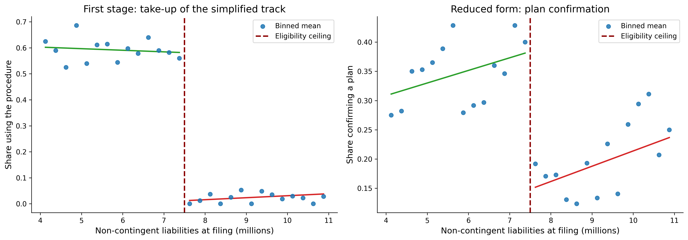
Finally, the difference-in-differences counterpart. The pre-period cohort files before the procedure exists, and its treatment indicator has to be built from total liabilities, because the non-contingent split is unobservable before the rule creates a reason to record it. That measurement error attenuates the intent-to-treat estimate, and rescaling by the first stage recovers the structural parameter.
did_rng = np.random.default_rng(20200219)
def make_cohort(size, post):
"""One filing cohort; the simplified track exists only when post is True."""
nc_liab = CUTOFF + did_rng.normal(0.0, 2.5, size)
total_liab = nc_liab + did_rng.gamma(1.5, 0.6, size) # contingent claims
cplx = did_rng.normal(0.0, 1.0, size)
can_use = (nc_liab <= CUTOFF) & bool(post)
p_use = np.where(can_use, np.clip(0.60 + 0.12 * cplx, 0.05, 0.95), 0.0)
used = (did_rng.random(size) < p_use).astype(float)
p_c = np.clip(0.17 + 0.010 * (nc_liab - CUTOFF) - 0.05 * cplx + TAU * used,
0.01, 0.99)
return pd.DataFrame({
"total_liab": total_liab,
"used": used,
"confirmed": (did_rng.random(size) < p_c).astype(float),
"post": float(post),
})
panel = pd.concat([make_cohort(4000, False), make_cohort(4000, True)],
ignore_index=True)
panel = panel[(panel["total_liab"] >= 4.0) & (panel["total_liab"] <= 11.0)].copy()
panel["treated"] = (panel["total_liab"] <= CUTOFF).astype(float)
D = np.column_stack([
np.ones(len(panel)),
panel["treated"].to_numpy(),
panel["post"].to_numpy(),
(panel["treated"] * panel["post"]).to_numpy(),
])
unit_w = np.ones(len(panel))
b_itt, se_itt = robust_wls(D, panel["confirmed"].to_numpy(), unit_w)
b_first, se_first = robust_wls(D, panel["used"].to_numpy(), unit_w)
print("=" * 66)
print(f" Difference-in-differences, n = {len(panel):,}"
f" (true effect = {TAU:.2f})")
print("=" * 66)
print(f" Treated x Post on confirmation (ITT) {b_itt[3]:>8.3f}"
f" (se {se_itt[3]:.3f})")
print(f" Treated x Post on take-up (1st stage) {b_first[3]:>8.3f}"
f" (se {se_first[3]:.3f})")
print(f" Rescaled: ITT / first stage {b_itt[3] / b_first[3]:>8.3f}")
print("=" * 66)==================================================================
Difference-in-differences, n = 6,398 (true effect = 0.32)
==================================================================
Treated x Post on confirmation (ITT) 0.111 (se 0.021)
Treated x Post on take-up (1st stage) 0.457 (se 0.016)
Rescaled: ITT / first stage 0.243
==================================================================The ITT lands far below the true effect because most nominally treated firms never use the procedure and some are misclassified by total rather than non-contingent liabilities. Dividing by the first stage recovers the parameter, which is the same reconciliation Hotchkiss, Iverson, and Zheng (2026) report as \(12.5 / 0.42 = 29.8\) percentage points against an RDD estimate of \(32.0\).
The template is what transfers. Given a Vietnamese threshold rule, a case-level or firm-level panel that records the running variable as the rule measures it, and a defensible argument that firms could not position themselves around the cutoff, the same chunks deliver a first stage, a LATE, a bandwidth path, and the two validity checks that decide whether any of it means anything.
41 Practical Considerations and Limitations
41.1 Known Limitations of Tobin’s Q in Vietnam
Several issues affect the reliability of Tobin’s Q estimates for Vietnamese firms:
Book value as replacement cost proxy: The simplified Q measure assumes that book value of assets approximates replacement cost. Under VAS’s heavy reliance on historical cost, this assumption may be more problematic than in IFRS-adopting countries, particularly for firms with significant land use rights or long-lived tangible assets.
Market microstructure effects: Vietnam’s daily price limits can prevent market prices from reaching equilibrium, potentially distorting the market value component. Foreign ownership limits may create artificial price premiums for certain stocks.
Preferred stock rarity: While this simplifies the computation (most Vietnamese firms have no preferred stock), it means the BE calculation is dominated by common equity, which may not capture all ownership claims.
Cross-listing effects: Some Vietnamese firms are listed on multiple venues (HOSE, HNX, UPCoM, or even foreign exchanges). Care must be taken to use consistent price and share data.
41.2 Known Limitations of Altman Z-Score in Vietnam
Calibration sample: The original Z-Score was estimated on mid-20th-century U.S. manufacturing firms. The Z’’-Score for emerging markets is more appropriate but was still estimated on a non-Vietnamese sample.
Accounting differences: VAS accounting standards produce financial ratios with different distributional properties than US GAAP or IFRS data, potentially affecting the discriminant function’s classification accuracy.
Banking and financial firms: The Z-Score was not designed for financial institutions, which have fundamentally different balance sheet structures. Banks, insurance companies, and securities firms should be excluded or analyzed separately.
Implicit guarantees: SOEs and firms connected to major economic groups may have implicit support that reduces actual default risk below Z-Score predictions.
41.3 Recommendations for Researchers
Based on our analysis, we offer the following recommendations for researchers working with Vietnamese data:
- Use the Z’’-Score (Emerging Market) variant as the primary distress measure for Vietnamese non-financial firms.
- Report multiple Q variants (Simple and Chung-Pruitt) to demonstrate robustness.
- Winsorize at 1%/99% to mitigate the impact of data errors and extreme outliers.
- Compute industry-adjusted measures when making cross-sectional comparisons.
- Use founding age rather than listing age when available, but report both to distinguish organizational maturity from capital market experience.
- Exclude financial firms from Z-Score analysis.
- Account for state ownership as a moderating variable in valuation and distress studies.
- Do not read the Z-Score as a recovery forecast. It scores the probability of distress, not what the legal system does with a distressed firm; see Chapter 40.
42 Summary
This chapter presented a treatment of three fundamental corporate finance measures (i.e., Tobin’s Q, the Altman Z-Score, and Company Age). We covered the theoretical foundations of each measure and provided extensive visualizations of cross-sectional and time-series patterns.
Key findings from our analysis of Vietnamese listed firms include:
Tobin’s Q varies substantially across industries and exchanges, with technology and consumer-facing sectors typically commanding higher valuations. HOSE-listed firms tend to have higher Q values than HNX or UPCoM firms, reflecting both firm quality differences and liquidity effects.
The Altman Z-Score reveals that a meaningful proportion of Vietnamese firms operate in or near the distress zone, though the appropriate variant matters; the emerging market Z’’-Score provides more nuanced classification than the original model. Financial health shows significant time-series variation, with notable deterioration during economic downturns.
Company age in Vietnam requires careful treatment due to the equitization of SOEs, which creates large gaps between founding age and listing age. This distinction is substantively important for understanding the relationship between maturity, valuation, and financial stability.
Distress resolution is a separate question from distress prediction, and the Z-Score speaks only to the latter. Hotchkiss, Iverson, and Zheng (2026) show that a change in insolvency procedure alone more than doubled the probability that a small U.S. business reorganized rather than liquidated, without harming creditor recoveries. Because Vietnamese exits are dominated by involuntary delisting rather than court-supervised reorganization, a Vietnamese Z’’-Score in the distress zone maps to a materially different outcome distribution than the same score in the sample the coefficients were fitted to. Chapter 40 develops this point and implements the fuzzy regression discontinuity and difference-in-differences designs that eligibility thresholds make available.